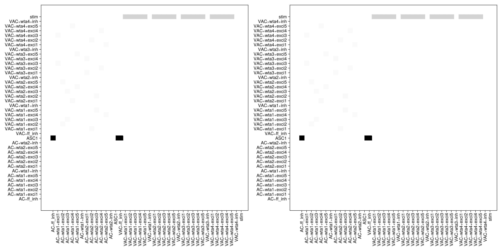
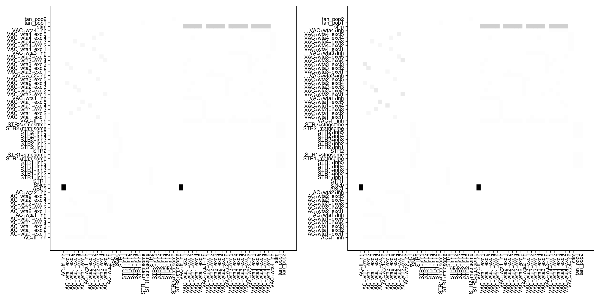

Synaptic plasticity and Reinforcement Learning
using Neuroblox
using OrdinaryDiffEqDefault, OrdinaryDiffEqVerner ## to build the ODE problem and solve it, gain access to multiple solvers from this
using Random ## for generating random variables
using CairoMakie ## for customized plotting recipies for blox
using CSV ## to read data from CSV files
using DataFrames ## to format the data into DataFrames
using Downloads ## to download image stimuli filesCortico-cortical plasticity
N_trials = 5 ##number of trials
trial_dur = 1000 ##ms1000create an image source block which takes image data from a .csv file and gives input to visual cortex
image_set = CSV.read(Downloads.download("raw.githubusercontent.com/Neuroblox/NeurobloxDocsHost/refs/heads/main/data/stimuli_set.csv"), DataFrame) ## reading data into DataFrame format
# change the source file to stimuli_set.csv
model_name=:g
# define stimulus source blox
# t_stimulus: how long the stimulus is on (in msec)
# t_pause : how long th estimulus is off (in msec)
@named stim = ImageStimulus(image_set; namespace=model_name, t_stimulus=trial_dur, t_pause=0);
# cortical blox
@named VAC = Cortical(; namespace=model_name, N_wta=4, N_exci=5, density=0.05, weight=1)
@named AC = Cortical(; namespace=model_name, N_wta=2, N_exci=5, density=0.05, weight=1)
# ascending system blox, modulating frequency set to 16 Hz
@named ASC1 = NextGenerationEI(; namespace=model_name, Cₑ=2*26,Cᵢ=1*26, alpha_invₑₑ=10.0/26, alpha_invₑᵢ=0.8/26, alpha_invᵢₑ=10.0/26, alpha_invᵢᵢ=0.8/26, kₑᵢ=0.6*26, kᵢₑ=0.6*26)
# define learning rule
hebbian_cort = HebbianPlasticity(K=5e-5, W_lim=7, t_pre=trial_dur, t_post=trial_dur)
g = MetaDiGraph()
add_edge!(g, stim => VAC, weight=14)
add_edge!(g, ASC1 => VAC, weight=44)
add_edge!(g, ASC1 => AC, weight=44)
add_edge!(g, VAC => AC, weight=3, density=0.1, learning_rule = hebbian_cort) ## give learning rule as parameter
agent = Agent(g; name=model_name); ## define agent
env = ClassificationEnvironment(stim, N_trials; name=:env, namespace=model_name)
fig = Figure(title="Adjacency matrix", size = (1600, 800))
adjacency(fig[1,1], agent)
run_experiment!(agent, env; t_warmup=200.0, alg=Vern7(), verbose=true)
adjacency(fig[1,2], agent)
fig
Cortico-striatal circuit performing category learning
It is one simplified biological instantiation of a reinforcement-learning system;
It is carrying out simple RL learning behavior but not faithfully simulating physiology.
The experiment it is trying to simulate is the category learning experiment [Antzoulatos2014] which was successfully modeled through a detailed corticostriatal model (Pathak et. al.)
time_block_dur = 90.0 ## ms (size of discrete time blocks)
N_trials = 100 ##number of trials
trial_dur = 1000 ##ms1000create an image source block which takes image data from a .csv file and gives input to visual cortex
image_set = CSV.read(Downloads.download("raw.githubusercontent.com/Neuroblox/NeurobloxDocsHost/refs/heads/main/data/stimuli_set.csv"), DataFrame) ## reading data into DataFrame format
# change the source file to stimuli_set.csv
model_name=:g
# define stimulus source blox
# t_stimulus: how long the stimulus is on (in msec)
# t_pause : how long th estimulus is off (in msec)
@named stim = ImageStimulus(image_set; namespace=model_name, t_stimulus=trial_dur, t_pause=0);
# cortical blox
@named VAC = Cortical(; namespace=model_name, N_wta=4, N_exci=5, density=0.05, weight=1)
@named AC = Cortical(; namespace=model_name, N_wta=2, N_exci=5, density=0.05, weight=1)
# ascending system blox, modulating frequency set to 16 Hz
@named ASC1 = NextGenerationEI(; namespace=model_name, Cₑ=2*26,Cᵢ=1*26, alpha_invₑₑ=10.0/26, alpha_invₑᵢ=0.8/26, alpha_invᵢₑ=10.0/26, alpha_invᵢᵢ=0.8/26, kₑᵢ=0.6*26, kᵢₑ=0.6*26)
# striatum blocks
@named STR1 = Striatum(; namespace=model_name, N_inhib=5)
@named STR2 = Striatum(; namespace=model_name, N_inhib=5)
@named tan_pop1 = TAN(κ=10; namespace=model_name)
@named tan_pop2 = TAN(κ=10; namespace=model_name)
@named AS = GreedyPolicy(; namespace=model_name, t_decision=2*time_block_dur)
@named SNcb = SNc(κ_DA=1; namespace=model_name)
hebbian_mod = HebbianModulationPlasticity(K=0.05, decay=0.01, α=2.5, θₘ=1, modulator=SNcb, t_pre=trial_dur, t_post=trial_dur, t_mod=time_block_dur)
hebbian_cort = HebbianPlasticity(K=5e-4, W_lim=7, t_pre=trial_dur, t_post=trial_dur)
# circuit
g = MetaDiGraph()
add_edge!(g, stim => VAC, weight=14)
add_edge!(g, ASC1 => VAC, weight=44)
add_edge!(g, ASC1 => AC, weight=44)
add_edge!(g, VAC => AC, weight=3, density=0.1, learning_rule = hebbian_cort)
add_edge!(g, AC=>STR1, weight = 0.075, density = 0.04, learning_rule = hebbian_mod)
add_edge!(g, AC=>STR2, weight = 0.075, density = 0.04, learning_rule = hebbian_mod)
add_edge!(g, tan_pop1 => STR1, weight = 1, t_event = time_block_dur)
add_edge!(g, tan_pop2 => STR2, weight = 1, t_event = time_block_dur)
add_edge!(g, STR1 => tan_pop1, weight = 1)
add_edge!(g, STR2 => tan_pop1, weight = 1)
add_edge!(g, STR1 => tan_pop2, weight = 1)
add_edge!(g, STR2 => tan_pop2, weight = 1)
add_edge!(g, STR1 => STR2, weight = 1, t_event = 2*time_block_dur)
add_edge!(g, STR2 => STR1, weight = 1, t_event = 2*time_block_dur)
add_edge!(g, STR1 => AS)
add_edge!(g, STR2 => AS)
add_edge!(g, STR1 => SNcb, weight = 1)
add_edge!(g, STR2 => SNcb, weight = 1)
agent = Agent(g; name=model_name, t_block = time_block_dur); ## define agent
env = ClassificationEnvironment(stim, N_trials; name=:env, namespace=model_name)
fig = Figure(title="Adjacency matrix", size = (1600, 800))
adjacency(fig[1,1], agent)Makie.AxisPlot(Axis (1 plots), Makie.Plot{NeurobloxBase.adjacency, Tuple{NeurobloxPharma.MTKAgent{ODESystem, ODEProblem{Vector{Float64}, Tuple{Float64, Float64}, true, MTKParameters{Vector{Float64}, Vector{Float64}, Tuple{}, Tuple{Vector{Float64}}, Tuple{Vector{Random.Xoshiro}}, Tuple{}}, ODEFunction{true, SciMLBase.AutoSpecialize, ModelingToolkit.GeneratedFunctionWrapper{(2, 3, true), RuntimeGeneratedFunctions.RuntimeGeneratedFunction{(:__mtk_arg_1, :___mtkparameters___, :t), ModelingToolkit.var"#_RGF_ModTag", ModelingToolkit.var"#_RGF_ModTag", (0x37ca7574, 0xaee79da8, 0xd0050018, 0x746df82c, 0xb4e98aad), Nothing}, RuntimeGeneratedFunctions.RuntimeGeneratedFunction{(:ˍ₋out, :__mtk_arg_1, :___mtkparameters___, :t), ModelingToolkit.var"#_RGF_ModTag", ModelingToolkit.var"#_RGF_ModTag", (0x00613558, 0x6d10e95c, 0xb6048dd8, 0x4fe6de69, 0xb87470c1), Nothing}}, LinearAlgebra.UniformScaling{Bool}, Nothing, Nothing, Nothing, Nothing, Nothing, Nothing, Nothing, Nothing, Nothing, Nothing, Nothing, ModelingToolkit.ObservedFunctionCache{ODESystem}, Nothing, ODESystem, SciMLBase.OverrideInitData{NonlinearProblem{Nothing, true, MTKParameters{Vector{Float64}, StaticArraysCore.SizedVector{0, Float64, Vector{Float64}}, Tuple{}, Tuple{Vector{Float64}}, Tuple{Vector{Random.Xoshiro}}, Tuple{}}, NonlinearFunction{true, SciMLBase.FullSpecialize, ModelingToolkit.GeneratedFunctionWrapper{(2, 2, true), RuntimeGeneratedFunctions.RuntimeGeneratedFunction{(:__mtk_arg_1, :___mtkparameters___), ModelingToolkit.var"#_RGF_ModTag", ModelingToolkit.var"#_RGF_ModTag", (0xdcbd81cb, 0x9d6eed6e, 0x66637004, 0x56b19dc0, 0xe6fb8efe), Nothing}, RuntimeGeneratedFunctions.RuntimeGeneratedFunction{(:ˍ₋out, :__mtk_arg_1, :___mtkparameters___), ModelingToolkit.var"#_RGF_ModTag", ModelingToolkit.var"#_RGF_ModTag", (0x4a788b89, 0x4e3883b8, 0xbbba1111, 0xc46033e3, 0x12375cb3), Nothing}}, LinearAlgebra.UniformScaling{Bool}, Nothing, Nothing, Nothing, Nothing, Nothing, Nothing, Nothing, Nothing, Nothing, Nothing, ModelingToolkit.ObservedFunctionCache{NonlinearSystem}, Nothing, NonlinearSystem, Nothing, Nothing}, Base.Pairs{Symbol, Union{}, Nothing, @NamedTuple{}}, SciMLBase.StandardNonlinearProblem}, ModelingToolkit.UpdateInitializeprob{SymbolicIndexingInterface.MultipleGetters{SymbolicIndexingInterface.ContinuousTimeseries, Vector{SymbolicIndexingInterface.AbstractGetIndexer}}, SymbolicIndexingInterface.MultipleSetters{Vector{SymbolicIndexingInterface.ParameterHookWrapper}}}, ComposedFunction{typeof(identity), SymbolicIndexingInterface.TimeIndependentObservedFunction{ModelingToolkit.GeneratedFunctionWrapper{(2, 2, true), RuntimeGeneratedFunctions.RuntimeGeneratedFunction{(:__mtk_arg_1, :___mtkparameters___), ModelingToolkit.var"#_RGF_ModTag", ModelingToolkit.var"#_RGF_ModTag", (0x14522b3f, 0xe4322423, 0x9eae821a, 0xba37560a, 0x8b33e1ac), Nothing}, RuntimeGeneratedFunctions.RuntimeGeneratedFunction{(:ˍ₋out, :__mtk_arg_1, :___mtkparameters___), ModelingToolkit.var"#_RGF_ModTag", ModelingToolkit.var"#_RGF_ModTag", (0x5c636ed5, 0x5cf2e1b1, 0x35ab5591, 0xef2aa329, 0x2d2f52e1), Nothing}}}}, Nothing, ModelingToolkit.InitializationMetadata{ModelingToolkit.ReconstructInitializeprob{ModelingToolkit.var"#_getter#ReconstructInitializeprob##2"{Tuple{ComposedFunction{Base.Fix1{typeof(reduce), typeof(vcat)}, SymbolicIndexingInterface.MultipleGetters{SymbolicIndexingInterface.ContinuousTimeseries, Tuple{SymbolicIndexingInterface.MultipleParametersGetter{SymbolicIndexingInterface.IndexerNotTimeseries, Vector{SymbolicIndexingInterface.GetParameterIndex{ModelingToolkit.ParameterIndex{SciMLStructures.Tunable, Int64}}}, Nothing}, SymbolicIndexingInterface.MultipleParametersGetter{SymbolicIndexingInterface.IndexerNotTimeseries, Vector{SymbolicIndexingInterface.GetParameterIndex{ModelingToolkit.ParameterIndex{SciMLStructures.Constants, Tuple{Int64, Int64}}}}, Nothing}, SymbolicIndexingInterface.MultipleParametersGetter{SymbolicIndexingInterface.IndexerNotTimeseries, Vector{SymbolicIndexingInterface.GetParameterIndex{ModelingToolkit.ParameterIndex{SciMLStructures.Tunable, Int64}}}, Nothing}, SymbolicIndexingInterface.MultipleParametersGetter{SymbolicIndexingInterface.IndexerNotTimeseries, Vector{SymbolicIndexingInterface.GetParameterIndex{ModelingToolkit.ParameterIndex{SciMLStructures.Constants, Tuple{Int64, Int64}}}}, Nothing}, SymbolicIndexingInterface.MultipleParametersGetter{SymbolicIndexingInterface.IndexerNotTimeseries, Vector{SymbolicIndexingInterface.GetParameterIndex{ModelingToolkit.ParameterIndex{SciMLStructures.Tunable, Int64}}}, Nothing}, SymbolicIndexingInterface.MultipleParametersGetter{SymbolicIndexingInterface.IndexerNotTimeseries, Vector{SymbolicIndexingInterface.GetParameterIndex{ModelingToolkit.ParameterIndex{SciMLStructures.Constants, Tuple{Int64, Int64}}}}, Nothing}, SymbolicIndexingInterface.MultipleParametersGetter{SymbolicIndexingInterface.IndexerNotTimeseries, Vector{SymbolicIndexingInterface.GetParameterIndex{ModelingToolkit.ParameterIndex{SciMLStructures.Tunable, Int64}}}, Nothing}, SymbolicIndexingInterface.MultipleParametersGetter{SymbolicIndexingInterface.IndexerNotTimeseries, Vector{SymbolicIndexingInterface.GetParameterIndex{ModelingToolkit.ParameterIndex{SciMLStructures.Constants, Tuple{Int64, Int64}}}}, Nothing}, SymbolicIndexingInterface.MultipleParametersGetter{SymbolicIndexingInterface.IndexerNotTimeseries, Vector{SymbolicIndexingInterface.GetParameterIndex{ModelingToolkit.ParameterIndex{SciMLStructures.Tunable, Int64}}}, Nothing}, SymbolicIndexingInterface.MultipleParametersGetter{SymbolicIndexingInterface.IndexerNotTimeseries, Vector{SymbolicIndexingInterface.GetParameterIndex{ModelingToolkit.ParameterIndex{SciMLStructures.Constants, Tuple{Int64, Int64}}}}, Nothing}, SymbolicIndexingInterface.MultipleParametersGetter{SymbolicIndexingInterface.IndexerNotTimeseries, Vector{SymbolicIndexingInterface.GetParameterIndex{ModelingToolkit.ParameterIndex{SciMLStructures.Tunable, Int64}}}, Nothing}, SymbolicIndexingInterface.MultipleParametersGetter{SymbolicIndexingInterface.IndexerNotTimeseries, Vector{SymbolicIndexingInterface.GetParameterIndex{ModelingToolkit.ParameterIndex{SciMLStructures.Constants, Tuple{Int64, Int64}}}}, Nothing}, SymbolicIndexingInterface.MultipleParametersGetter{SymbolicIndexingInterface.IndexerNotTimeseries, Vector{SymbolicIndexingInterface.GetParameterIndex{ModelingToolkit.ParameterIndex{SciMLStructures.Tunable, Int64}}}, Nothing}, SymbolicIndexingInterface.MultipleParametersGetter{SymbolicIndexingInterface.IndexerNotTimeseries, Vector{SymbolicIndexingInterface.GetParameterIndex{ModelingToolkit.ParameterIndex{SciMLStructures.Constants, Tuple{Int64, Int64}}}}, Nothing}, SymbolicIndexingInterface.MultipleParametersGetter{SymbolicIndexingInterface.IndexerNotTimeseries, Vector{SymbolicIndexingInterface.GetParameterIndex{ModelingToolkit.ParameterIndex{SciMLStructures.Tunable, Int64}}}, Nothing}, SymbolicIndexingInterface.MultipleParametersGetter{SymbolicIndexingInterface.IndexerNotTimeseries, Vector{SymbolicIndexingInterface.GetParameterIndex{ModelingToolkit.ParameterIndex{SciMLStructures.Constants, Tuple{Int64, Int64}}}}, Nothing}, SymbolicIndexingInterface.MultipleParametersGetter{SymbolicIndexingInterface.IndexerNotTimeseries, Vector{SymbolicIndexingInterface.GetParameterIndex{ModelingToolkit.ParameterIndex{SciMLStructures.Tunable, Int64}}}, Nothing}, SymbolicIndexingInterface.MultipleParametersGetter{SymbolicIndexingInterface.IndexerNotTimeseries, Vector{SymbolicIndexingInterface.GetParameterIndex{ModelingToolkit.ParameterIndex{SciMLStructures.Constants, Tuple{Int64, Int64}}}}, Nothing}, SymbolicIndexingInterface.MultipleParametersGetter{SymbolicIndexingInterface.IndexerNotTimeseries, Vector{SymbolicIndexingInterface.GetParameterIndex{ModelingToolkit.ParameterIndex{SciMLStructures.Tunable, Int64}}}, Nothing}, SymbolicIndexingInterface.MultipleParametersGetter{SymbolicIndexingInterface.IndexerNotTimeseries, Vector{SymbolicIndexingInterface.GetParameterIndex{ModelingToolkit.ParameterIndex{SciMLStructures.Constants, Tuple{Int64, Int64}}}}, Nothing}, SymbolicIndexingInterface.MultipleParametersGetter{SymbolicIndexingInterface.IndexerNotTimeseries, Vector{SymbolicIndexingInterface.GetParameterIndex{ModelingToolkit.ParameterIndex{SciMLStructures.Tunable, Int64}}}, Nothing}, SymbolicIndexingInterface.MultipleParametersGetter{SymbolicIndexingInterface.IndexerNotTimeseries, Vector{SymbolicIndexingInterface.GetParameterIndex{ModelingToolkit.ParameterIndex{SciMLStructures.Constants, Tuple{Int64, Int64}}}}, Nothing}, SymbolicIndexingInterface.MultipleParametersGetter{SymbolicIndexingInterface.IndexerNotTimeseries, Vector{SymbolicIndexingInterface.GetParameterIndex{ModelingToolkit.ParameterIndex{SciMLStructures.Tunable, Int64}}}, Nothing}, SymbolicIndexingInterface.MultipleParametersGetter{SymbolicIndexingInterface.IndexerNotTimeseries, Vector{SymbolicIndexingInterface.GetParameterIndex{ModelingToolkit.ParameterIndex{SciMLStructures.Constants, Tuple{Int64, Int64}}}}, Nothing}, SymbolicIndexingInterface.MultipleParametersGetter{SymbolicIndexingInterface.IndexerNotTimeseries, Vector{SymbolicIndexingInterface.GetParameterIndex{ModelingToolkit.ParameterIndex{SciMLStructures.Tunable, Int64}}}, Nothing}, SymbolicIndexingInterface.MultipleParametersGetter{SymbolicIndexingInterface.IndexerNotTimeseries, Vector{SymbolicIndexingInterface.GetParameterIndex{ModelingToolkit.ParameterIndex{SciMLStructures.Constants, Tuple{Int64, Int64}}}}, Nothing}, SymbolicIndexingInterface.MultipleParametersGetter{SymbolicIndexingInterface.IndexerNotTimeseries, Vector{SymbolicIndexingInterface.GetParameterIndex{ModelingToolkit.ParameterIndex{SciMLStructures.Tunable, Int64}}}, Nothing}, SymbolicIndexingInterface.MultipleParametersGetter{SymbolicIndexingInterface.IndexerNotTimeseries, Vector{SymbolicIndexingInterface.GetParameterIndex{ModelingToolkit.ParameterIndex{SciMLStructures.Constants, Tuple{Int64, Int64}}}}, Nothing}, SymbolicIndexingInterface.MultipleParametersGetter{SymbolicIndexingInterface.IndexerNotTimeseries, Vector{SymbolicIndexingInterface.GetParameterIndex{ModelingToolkit.ParameterIndex{SciMLStructures.Tunable, Int64}}}, Nothing}, SymbolicIndexingInterface.MultipleParametersGetter{SymbolicIndexingInterface.IndexerNotTimeseries, Vector{SymbolicIndexingInterface.GetParameterIndex{ModelingToolkit.ParameterIndex{SciMLStructures.Constants, Tuple{Int64, Int64}}}}, Nothing}, SymbolicIndexingInterface.MultipleParametersGetter{SymbolicIndexingInterface.IndexerNotTimeseries, Vector{SymbolicIndexingInterface.GetParameterIndex{ModelingToolkit.ParameterIndex{SciMLStructures.Tunable, Int64}}}, Nothing}, SymbolicIndexingInterface.MultipleParametersGetter{SymbolicIndexingInterface.IndexerNotTimeseries, Vector{SymbolicIndexingInterface.GetParameterIndex{ModelingToolkit.ParameterIndex{SciMLStructures.Constants, Tuple{Int64, Int64}}}}, Nothing}, SymbolicIndexingInterface.MultipleParametersGetter{SymbolicIndexingInterface.IndexerNotTimeseries, Vector{SymbolicIndexingInterface.GetParameterIndex{ModelingToolkit.ParameterIndex{SciMLStructures.Tunable, Int64}}}, Nothing}, SymbolicIndexingInterface.MultipleParametersGetter{SymbolicIndexingInterface.IndexerNotTimeseries, Vector{SymbolicIndexingInterface.GetParameterIndex{ModelingToolkit.ParameterIndex{SciMLStructures.Constants, Tuple{Int64, Int64}}}}, Nothing}, SymbolicIndexingInterface.MultipleParametersGetter{SymbolicIndexingInterface.IndexerNotTimeseries, Vector{SymbolicIndexingInterface.GetParameterIndex{ModelingToolkit.ParameterIndex{SciMLStructures.Tunable, Int64}}}, Nothing}, SymbolicIndexingInterface.MultipleParametersGetter{SymbolicIndexingInterface.IndexerNotTimeseries, Vector{SymbolicIndexingInterface.GetParameterIndex{ModelingToolkit.ParameterIndex{SciMLStructures.Constants, Tuple{Int64, Int64}}}}, Nothing}, SymbolicIndexingInterface.MultipleParametersGetter{SymbolicIndexingInterface.IndexerNotTimeseries, Vector{SymbolicIndexingInterface.GetParameterIndex{ModelingToolkit.ParameterIndex{SciMLStructures.Tunable, Int64}}}, Nothing}, SymbolicIndexingInterface.MultipleParametersGetter{SymbolicIndexingInterface.IndexerNotTimeseries, Vector{SymbolicIndexingInterface.GetParameterIndex{ModelingToolkit.ParameterIndex{SciMLStructures.Constants, Tuple{Int64, Int64}}}}, Nothing}, SymbolicIndexingInterface.MultipleParametersGetter{SymbolicIndexingInterface.IndexerNotTimeseries, Vector{SymbolicIndexingInterface.GetParameterIndex{ModelingToolkit.ParameterIndex{SciMLStructures.Tunable, Int64}}}, Nothing}, SymbolicIndexingInterface.MultipleParametersGetter{SymbolicIndexingInterface.IndexerNotTimeseries, Vector{SymbolicIndexingInterface.GetParameterIndex{ModelingToolkit.ParameterIndex{SciMLStructures.Constants, Tuple{Int64, Int64}}}}, Nothing}, SymbolicIndexingInterface.MultipleParametersGetter{SymbolicIndexingInterface.IndexerNotTimeseries, Vector{SymbolicIndexingInterface.GetParameterIndex{ModelingToolkit.ParameterIndex{SciMLStructures.Tunable, Int64}}}, Nothing}, SymbolicIndexingInterface.MultipleParametersGetter{SymbolicIndexingInterface.IndexerNotTimeseries, Vector{SymbolicIndexingInterface.GetParameterIndex{ModelingToolkit.ParameterIndex{SciMLStructures.Constants, Tuple{Int64, Int64}}}}, Nothing}, SymbolicIndexingInterface.MultipleParametersGetter{SymbolicIndexingInterface.IndexerNotTimeseries, Vector{SymbolicIndexingInterface.GetParameterIndex{ModelingToolkit.ParameterIndex{SciMLStructures.Tunable, Int64}}}, Nothing}, SymbolicIndexingInterface.MultipleParametersGetter{SymbolicIndexingInterface.IndexerNotTimeseries, Vector{SymbolicIndexingInterface.GetParameterIndex{ModelingToolkit.ParameterIndex{SciMLStructures.Constants, Tuple{Int64, Int64}}}}, Nothing}, SymbolicIndexingInterface.MultipleParametersGetter{SymbolicIndexingInterface.IndexerNotTimeseries, Vector{SymbolicIndexingInterface.GetParameterIndex{ModelingToolkit.ParameterIndex{SciMLStructures.Tunable, Int64}}}, Nothing}, SymbolicIndexingInterface.MultipleParametersGetter{SymbolicIndexingInterface.IndexerNotTimeseries, Vector{SymbolicIndexingInterface.GetParameterIndex{ModelingToolkit.ParameterIndex{SciMLStructures.Constants, Tuple{Int64, Int64}}}}, Nothing}, SymbolicIndexingInterface.MultipleParametersGetter{SymbolicIndexingInterface.IndexerNotTimeseries, Vector{SymbolicIndexingInterface.GetParameterIndex{ModelingToolkit.ParameterIndex{SciMLStructures.Tunable, Int64}}}, Nothing}, SymbolicIndexingInterface.MultipleParametersGetter{SymbolicIndexingInterface.IndexerNotTimeseries, Vector{SymbolicIndexingInterface.GetParameterIndex{ModelingToolkit.ParameterIndex{SciMLStructures.Constants, Tuple{Int64, Int64}}}}, Nothing}, SymbolicIndexingInterface.MultipleParametersGetter{SymbolicIndexingInterface.IndexerNotTimeseries, Vector{SymbolicIndexingInterface.GetParameterIndex{ModelingToolkit.ParameterIndex{SciMLStructures.Tunable, Int64}}}, Nothing}, SymbolicIndexingInterface.MultipleParametersGetter{SymbolicIndexingInterface.IndexerNotTimeseries, Vector{SymbolicIndexingInterface.GetParameterIndex{ModelingToolkit.ParameterIndex{SciMLStructures.Constants, Tuple{Int64, Int64}}}}, Nothing}, SymbolicIndexingInterface.MultipleParametersGetter{SymbolicIndexingInterface.IndexerNotTimeseries, Vector{SymbolicIndexingInterface.GetParameterIndex{ModelingToolkit.ParameterIndex{SciMLStructures.Tunable, Int64}}}, Nothing}, SymbolicIndexingInterface.MultipleParametersGetter{SymbolicIndexingInterface.IndexerNotTimeseries, Vector{SymbolicIndexingInterface.GetParameterIndex{ModelingToolkit.ParameterIndex{SciMLStructures.Constants, Tuple{Int64, Int64}}}}, Nothing}, SymbolicIndexingInterface.MultipleParametersGetter{SymbolicIndexingInterface.IndexerNotTimeseries, Vector{SymbolicIndexingInterface.GetParameterIndex{ModelingToolkit.ParameterIndex{SciMLStructures.Tunable, Int64}}}, Nothing}, SymbolicIndexingInterface.MultipleParametersGetter{SymbolicIndexingInterface.IndexerNotTimeseries, Vector{SymbolicIndexingInterface.GetParameterIndex{ModelingToolkit.ParameterIndex{SciMLStructures.Constants, Tuple{Int64, Int64}}}}, Nothing}, SymbolicIndexingInterface.MultipleParametersGetter{SymbolicIndexingInterface.IndexerNotTimeseries, Vector{SymbolicIndexingInterface.GetParameterIndex{ModelingToolkit.ParameterIndex{SciMLStructures.Tunable, Int64}}}, Nothing}, SymbolicIndexingInterface.MultipleParametersGetter{SymbolicIndexingInterface.IndexerNotTimeseries, Vector{SymbolicIndexingInterface.GetParameterIndex{ModelingToolkit.ParameterIndex{SciMLStructures.Constants, Tuple{Int64, Int64}}}}, Nothing}, SymbolicIndexingInterface.MultipleParametersGetter{SymbolicIndexingInterface.IndexerNotTimeseries, Vector{SymbolicIndexingInterface.GetParameterIndex{ModelingToolkit.ParameterIndex{SciMLStructures.Tunable, Int64}}}, Nothing}, SymbolicIndexingInterface.MultipleParametersGetter{SymbolicIndexingInterface.IndexerNotTimeseries, Vector{SymbolicIndexingInterface.GetParameterIndex{ModelingToolkit.ParameterIndex{SciMLStructures.Constants, Tuple{Int64, Int64}}}}, Nothing}, SymbolicIndexingInterface.MultipleParametersGetter{SymbolicIndexingInterface.IndexerNotTimeseries, Vector{SymbolicIndexingInterface.GetParameterIndex{ModelingToolkit.ParameterIndex{SciMLStructures.Tunable, Int64}}}, Nothing}, SymbolicIndexingInterface.MultipleParametersGetter{SymbolicIndexingInterface.IndexerNotTimeseries, Vector{SymbolicIndexingInterface.GetParameterIndex{ModelingToolkit.ParameterIndex{SciMLStructures.Constants, Tuple{Int64, Int64}}}}, Nothing}, SymbolicIndexingInterface.MultipleParametersGetter{SymbolicIndexingInterface.IndexerNotTimeseries, Vector{SymbolicIndexingInterface.GetParameterIndex{ModelingToolkit.ParameterIndex{SciMLStructures.Tunable, Int64}}}, Nothing}, SymbolicIndexingInterface.MultipleParametersGetter{SymbolicIndexingInterface.IndexerNotTimeseries, Vector{SymbolicIndexingInterface.GetParameterIndex{ModelingToolkit.ParameterIndex{SciMLStructures.Constants, Tuple{Int64, Int64}}}}, Nothing}, SymbolicIndexingInterface.MultipleParametersGetter{SymbolicIndexingInterface.IndexerNotTimeseries, Vector{SymbolicIndexingInterface.GetParameterIndex{ModelingToolkit.ParameterIndex{SciMLStructures.Tunable, Int64}}}, Nothing}, SymbolicIndexingInterface.MultipleParametersGetter{SymbolicIndexingInterface.IndexerNotTimeseries, Vector{SymbolicIndexingInterface.GetParameterIndex{ModelingToolkit.ParameterIndex{SciMLStructures.Constants, Tuple{Int64, Int64}}}}, Nothing}, SymbolicIndexingInterface.MultipleParametersGetter{SymbolicIndexingInterface.IndexerNotTimeseries, Vector{SymbolicIndexingInterface.GetParameterIndex{ModelingToolkit.ParameterIndex{SciMLStructures.Tunable, Int64}}}, Nothing}, SymbolicIndexingInterface.MultipleParametersGetter{SymbolicIndexingInterface.IndexerNotTimeseries, Vector{SymbolicIndexingInterface.GetParameterIndex{ModelingToolkit.ParameterIndex{SciMLStructures.Constants, Tuple{Int64, Int64}}}}, Nothing}, SymbolicIndexingInterface.MultipleParametersGetter{SymbolicIndexingInterface.IndexerNotTimeseries, Vector{SymbolicIndexingInterface.GetParameterIndex{ModelingToolkit.ParameterIndex{SciMLStructures.Tunable, Int64}}}, Nothing}, SymbolicIndexingInterface.MultipleParametersGetter{SymbolicIndexingInterface.IndexerNotTimeseries, Vector{SymbolicIndexingInterface.GetParameterIndex{ModelingToolkit.ParameterIndex{SciMLStructures.Constants, Tuple{Int64, Int64}}}}, Nothing}, SymbolicIndexingInterface.MultipleParametersGetter{SymbolicIndexingInterface.IndexerNotTimeseries, Vector{SymbolicIndexingInterface.GetParameterIndex{ModelingToolkit.ParameterIndex{SciMLStructures.Tunable, Int64}}}, Nothing}, SymbolicIndexingInterface.MultipleParametersGetter{SymbolicIndexingInterface.IndexerNotTimeseries, Vector{SymbolicIndexingInterface.GetParameterIndex{ModelingToolkit.ParameterIndex{SciMLStructures.Constants, Tuple{Int64, Int64}}}}, Nothing}, SymbolicIndexingInterface.MultipleParametersGetter{SymbolicIndexingInterface.IndexerNotTimeseries, Vector{SymbolicIndexingInterface.GetParameterIndex{ModelingToolkit.ParameterIndex{SciMLStructures.Tunable, Int64}}}, Nothing}, SymbolicIndexingInterface.MultipleParametersGetter{SymbolicIndexingInterface.IndexerNotTimeseries, Vector{SymbolicIndexingInterface.GetParameterIndex{ModelingToolkit.ParameterIndex{SciMLStructures.Constants, Tuple{Int64, Int64}}}}, Nothing}, SymbolicIndexingInterface.MultipleParametersGetter{SymbolicIndexingInterface.IndexerNotTimeseries, Vector{SymbolicIndexingInterface.GetParameterIndex{ModelingToolkit.ParameterIndex{SciMLStructures.Tunable, Int64}}}, Nothing}, SymbolicIndexingInterface.MultipleParametersGetter{SymbolicIndexingInterface.IndexerNotTimeseries, Vector{SymbolicIndexingInterface.GetParameterIndex{ModelingToolkit.ParameterIndex{SciMLStructures.Constants, Tuple{Int64, Int64}}}}, Nothing}, SymbolicIndexingInterface.MultipleParametersGetter{SymbolicIndexingInterface.IndexerNotTimeseries, Vector{SymbolicIndexingInterface.GetParameterIndex{ModelingToolkit.ParameterIndex{SciMLStructures.Tunable, Int64}}}, Nothing}, SymbolicIndexingInterface.MultipleParametersGetter{SymbolicIndexingInterface.IndexerNotTimeseries, Vector{SymbolicIndexingInterface.GetParameterIndex{ModelingToolkit.ParameterIndex{SciMLStructures.Constants, Tuple{Int64, Int64}}}}, Nothing}, SymbolicIndexingInterface.MultipleParametersGetter{SymbolicIndexingInterface.IndexerNotTimeseries, Vector{SymbolicIndexingInterface.GetParameterIndex{ModelingToolkit.ParameterIndex{SciMLStructures.Tunable, Int64}}}, Nothing}, SymbolicIndexingInterface.MultipleParametersGetter{SymbolicIndexingInterface.IndexerNotTimeseries, Vector{SymbolicIndexingInterface.GetParameterIndex{ModelingToolkit.ParameterIndex{SciMLStructures.Constants, Tuple{Int64, Int64}}}}, Nothing}, SymbolicIndexingInterface.MultipleParametersGetter{SymbolicIndexingInterface.IndexerNotTimeseries, Vector{SymbolicIndexingInterface.GetParameterIndex{ModelingToolkit.ParameterIndex{SciMLStructures.Tunable, Int64}}}, Nothing}, SymbolicIndexingInterface.MultipleGetters{SymbolicIndexingInterface.ContinuousTimeseries, Vector{SymbolicIndexingInterface.GetIndepvar}}, SymbolicIndexingInterface.MultipleParametersGetter{SymbolicIndexingInterface.IndexerNotTimeseries, Vector{SymbolicIndexingInterface.GetParameterIndex{ModelingToolkit.ParameterIndex{SciMLStructures.Tunable, Int64}}}, Nothing}, SymbolicIndexingInterface.MultipleParametersGetter{SymbolicIndexingInterface.IndexerNotTimeseries, Vector{SymbolicIndexingInterface.GetParameterIndex{ModelingToolkit.ParameterIndex{SciMLStructures.Constants, Tuple{Int64, Int64}}}}, Nothing}, SymbolicIndexingInterface.MultipleParametersGetter{SymbolicIndexingInterface.IndexerNotTimeseries, Vector{SymbolicIndexingInterface.GetParameterIndex{ModelingToolkit.ParameterIndex{SciMLStructures.Tunable, Int64}}}, Nothing}, SymbolicIndexingInterface.MultipleParametersGetter{SymbolicIndexingInterface.IndexerNotTimeseries, Vector{SymbolicIndexingInterface.GetParameterIndex{ModelingToolkit.ParameterIndex{SciMLStructures.Constants, Tuple{Int64, Int64}}}}, Nothing}, SymbolicIndexingInterface.MultipleParametersGetter{SymbolicIndexingInterface.IndexerNotTimeseries, Vector{SymbolicIndexingInterface.GetParameterIndex{ModelingToolkit.ParameterIndex{SciMLStructures.Tunable, Int64}}}, Nothing}, SymbolicIndexingInterface.MultipleParametersGetter{SymbolicIndexingInterface.IndexerNotTimeseries, Vector{SymbolicIndexingInterface.GetParameterIndex{ModelingToolkit.ParameterIndex{SciMLStructures.Constants, Tuple{Int64, Int64}}}}, Nothing}, SymbolicIndexingInterface.MultipleParametersGetter{SymbolicIndexingInterface.IndexerNotTimeseries, Vector{SymbolicIndexingInterface.GetParameterIndex{ModelingToolkit.ParameterIndex{SciMLStructures.Tunable, Int64}}}, Nothing}, SymbolicIndexingInterface.MultipleParametersGetter{SymbolicIndexingInterface.IndexerNotTimeseries, Vector{SymbolicIndexingInterface.GetParameterIndex{ModelingToolkit.ParameterIndex{SciMLStructures.Constants, Tuple{Int64, Int64}}}}, Nothing}, SymbolicIndexingInterface.MultipleParametersGetter{SymbolicIndexingInterface.IndexerNotTimeseries, Vector{SymbolicIndexingInterface.GetParameterIndex{ModelingToolkit.ParameterIndex{SciMLStructures.Tunable, Int64}}}, Nothing}, SymbolicIndexingInterface.MultipleParametersGetter{SymbolicIndexingInterface.IndexerNotTimeseries, Vector{SymbolicIndexingInterface.GetParameterIndex{ModelingToolkit.ParameterIndex{SciMLStructures.Constants, Tuple{Int64, Int64}}}}, Nothing}, SymbolicIndexingInterface.MultipleParametersGetter{SymbolicIndexingInterface.IndexerNotTimeseries, Vector{SymbolicIndexingInterface.GetParameterIndex{ModelingToolkit.ParameterIndex{SciMLStructures.Tunable, Int64}}}, Nothing}, SymbolicIndexingInterface.MultipleParametersGetter{SymbolicIndexingInterface.IndexerNotTimeseries, Vector{SymbolicIndexingInterface.GetParameterIndex{ModelingToolkit.ParameterIndex{SciMLStructures.Constants, Tuple{Int64, Int64}}}}, Nothing}, SymbolicIndexingInterface.MultipleParametersGetter{SymbolicIndexingInterface.IndexerNotTimeseries, Vector{SymbolicIndexingInterface.GetParameterIndex{ModelingToolkit.ParameterIndex{SciMLStructures.Tunable, Int64}}}, Nothing}, SymbolicIndexingInterface.MultipleParametersGetter{SymbolicIndexingInterface.IndexerNotTimeseries, Vector{SymbolicIndexingInterface.GetParameterIndex{ModelingToolkit.ParameterIndex{SciMLStructures.Constants, Tuple{Int64, Int64}}}}, Nothing}, SymbolicIndexingInterface.MultipleParametersGetter{SymbolicIndexingInterface.IndexerNotTimeseries, Vector{SymbolicIndexingInterface.GetParameterIndex{ModelingToolkit.ParameterIndex{SciMLStructures.Tunable, Int64}}}, Nothing}, SymbolicIndexingInterface.MultipleParametersGetter{SymbolicIndexingInterface.IndexerNotTimeseries, Vector{SymbolicIndexingInterface.GetParameterIndex{ModelingToolkit.ParameterIndex{SciMLStructures.Initials, Int64}}}, Nothing}}}}, Returns{StaticArraysCore.SizedVector{0, Float64, Vector{Float64}}}, Returns{Tuple{}}, SymbolicIndexingInterface.MultipleParametersGetter{SymbolicIndexingInterface.IndexerNotTimeseries, Tuple{SymbolicIndexingInterface.MultipleParametersGetter{SymbolicIndexingInterface.IndexerNotTimeseries, Vector{SymbolicIndexingInterface.GetParameterIndex{ModelingToolkit.ParameterIndex{SciMLStructures.Constants, Tuple{Int64, Int64}}}}, Nothing}}, Nothing}, SymbolicIndexingInterface.MultipleParametersGetter{SymbolicIndexingInterface.IndexerNotTimeseries, Tuple{SymbolicIndexingInterface.MultipleParametersGetter{SymbolicIndexingInterface.IndexerNotTimeseries, Vector{SymbolicIndexingInterface.GetParameterIndex{ModelingToolkit.ParameterIndex{ModelingToolkit.Nonnumeric, Tuple{Int64, Int64}}}}, Nothing}}, Nothing}}}}, SymbolicIndexingInterface.ParameterHookWrapper{SymbolicIndexingInterface.MultipleSetters{Vector{SymbolicIndexingInterface.SetParameterIndex{ModelingToolkit.ParameterIndex{SciMLStructures.Initials, Int64}}}}, Vector{SymbolicUtils.BasicSymbolic{Real}}}}, Val{false}}, Nothing}, Base.Pairs{Symbol, SciMLBase.CallbackSet{Tuple{}, Tuple{SciMLBase.DiscreteCallback{DiffEqCallbacks.var"#88#89"{Bool, Float64, Base.RefValue{Int64}, Base.RefValue{Float64}}, DiffEqCallbacks.PeriodicCallbackAffect{RuntimeGeneratedFunctions.RuntimeGeneratedFunction{(Symbol("##MTKIntegrator#582"),), ModelingToolkit.var"#_RGF_ModTag", ModelingToolkit.var"#_RGF_ModTag", (0xb7415595, 0x50fd3b00, 0xa74ee81c, 0xd279fcd8, 0x9a210f6d), Nothing}, Float64, Base.RefValue{Float64}, Base.RefValue{Int64}}, DiffEqCallbacks.var"#90#91"{Int64, Bool, typeof(SciMLBase.INITIALIZE_DEFAULT), Float64, DiffEqCallbacks.PeriodicCallbackAffect{RuntimeGeneratedFunctions.RuntimeGeneratedFunction{(Symbol("##MTKIntegrator#582"),), ModelingToolkit.var"#_RGF_ModTag", ModelingToolkit.var"#_RGF_ModTag", (0xb7415595, 0x50fd3b00, 0xa74ee81c, 0xd279fcd8, 0x9a210f6d), Nothing}, Float64, Base.RefValue{Float64}, Base.RefValue{Int64}}, Base.RefValue{Int64}, Base.RefValue{Float64}}, typeof(SciMLBase.FINALIZE_DEFAULT), SciMLBase.CheckInit, Tuple{}}, SciMLBase.DiscreteCallback{DiffEqCallbacks.var"#88#89"{Bool, Float64, Base.RefValue{Int64}, Base.RefValue{Float64}}, DiffEqCallbacks.PeriodicCallbackAffect{RuntimeGeneratedFunctions.RuntimeGeneratedFunction{(Symbol("##MTKIntegrator#583"),), ModelingToolkit.var"#_RGF_ModTag", ModelingToolkit.var"#_RGF_ModTag", (0x6fb8826d, 0x2ec66654, 0x1bf1bf22, 0x56b5ac56, 0x18fba6b8), Nothing}, Float64, Base.RefValue{Float64}, Base.RefValue{Int64}}, DiffEqCallbacks.var"#90#91"{Int64, Bool, typeof(SciMLBase.INITIALIZE_DEFAULT), Float64, DiffEqCallbacks.PeriodicCallbackAffect{RuntimeGeneratedFunctions.RuntimeGeneratedFunction{(Symbol("##MTKIntegrator#583"),), ModelingToolkit.var"#_RGF_ModTag", ModelingToolkit.var"#_RGF_ModTag", (0x6fb8826d, 0x2ec66654, 0x1bf1bf22, 0x56b5ac56, 0x18fba6b8), Nothing}, Float64, Base.RefValue{Float64}, Base.RefValue{Int64}}, Base.RefValue{Int64}, Base.RefValue{Float64}}, typeof(SciMLBase.FINALIZE_DEFAULT), SciMLBase.CheckInit, Tuple{}}, SciMLBase.DiscreteCallback{DiffEqCallbacks.PresetTimeFunction{Vector{Float64}, typeof(SciMLBase.INITIALIZE_DEFAULT), RuntimeGeneratedFunctions.RuntimeGeneratedFunction{(Symbol("##MTKIntegrator#584"),), ModelingToolkit.var"#_RGF_ModTag", ModelingToolkit.var"#_RGF_ModTag", (0x5493f83c, 0xb24d2daf, 0xe51c1d76, 0xd5417f53, 0x3da434eb), Nothing}}, RuntimeGeneratedFunctions.RuntimeGeneratedFunction{(Symbol("##MTKIntegrator#584"),), ModelingToolkit.var"#_RGF_ModTag", ModelingToolkit.var"#_RGF_ModTag", (0x5493f83c, 0xb24d2daf, 0xe51c1d76, 0xd5417f53, 0x3da434eb), Nothing}, DiffEqCallbacks.PresetTimeFunction{Vector{Float64}, typeof(SciMLBase.INITIALIZE_DEFAULT), RuntimeGeneratedFunctions.RuntimeGeneratedFunction{(Symbol("##MTKIntegrator#584"),), ModelingToolkit.var"#_RGF_ModTag", ModelingToolkit.var"#_RGF_ModTag", (0x5493f83c, 0xb24d2daf, 0xe51c1d76, 0xd5417f53, 0x3da434eb), Nothing}}, typeof(SciMLBase.FINALIZE_DEFAULT), SciMLBase.CheckInit, Tuple{}}, SciMLBase.DiscreteCallback{DiffEqCallbacks.PresetTimeFunction{Vector{Float64}, typeof(SciMLBase.INITIALIZE_DEFAULT), RuntimeGeneratedFunctions.RuntimeGeneratedFunction{(Symbol("##MTKIntegrator#585"),), ModelingToolkit.var"#_RGF_ModTag", ModelingToolkit.var"#_RGF_ModTag", (0x9008b1a7, 0x07d02448, 0x766ba7bc, 0xd3208d70, 0x663ecd21), Nothing}}, RuntimeGeneratedFunctions.RuntimeGeneratedFunction{(Symbol("##MTKIntegrator#585"),), ModelingToolkit.var"#_RGF_ModTag", ModelingToolkit.var"#_RGF_ModTag", (0x9008b1a7, 0x07d02448, 0x766ba7bc, 0xd3208d70, 0x663ecd21), Nothing}, DiffEqCallbacks.PresetTimeFunction{Vector{Float64}, typeof(SciMLBase.INITIALIZE_DEFAULT), RuntimeGeneratedFunctions.RuntimeGeneratedFunction{(Symbol("##MTKIntegrator#585"),), ModelingToolkit.var"#_RGF_ModTag", ModelingToolkit.var"#_RGF_ModTag", (0x9008b1a7, 0x07d02448, 0x766ba7bc, 0xd3208d70, 0x663ecd21), Nothing}}, typeof(SciMLBase.FINALIZE_DEFAULT), SciMLBase.CheckInit, Tuple{}}, SciMLBase.DiscreteCallback{DiffEqCallbacks.PresetTimeFunction{Vector{Float64}, typeof(SciMLBase.INITIALIZE_DEFAULT), RuntimeGeneratedFunctions.RuntimeGeneratedFunction{(Symbol("##MTKIntegrator#586"),), ModelingToolkit.var"#_RGF_ModTag", ModelingToolkit.var"#_RGF_ModTag", (0x0b95fa0f, 0x4ec5d1e3, 0x8bebe4e4, 0x0fcd586d, 0x6c662328), Nothing}}, RuntimeGeneratedFunctions.RuntimeGeneratedFunction{(Symbol("##MTKIntegrator#586"),), ModelingToolkit.var"#_RGF_ModTag", ModelingToolkit.var"#_RGF_ModTag", (0x0b95fa0f, 0x4ec5d1e3, 0x8bebe4e4, 0x0fcd586d, 0x6c662328), Nothing}, DiffEqCallbacks.PresetTimeFunction{Vector{Float64}, typeof(SciMLBase.INITIALIZE_DEFAULT), RuntimeGeneratedFunctions.RuntimeGeneratedFunction{(Symbol("##MTKIntegrator#586"),), ModelingToolkit.var"#_RGF_ModTag", ModelingToolkit.var"#_RGF_ModTag", (0x0b95fa0f, 0x4ec5d1e3, 0x8bebe4e4, 0x0fcd586d, 0x6c662328), Nothing}}, typeof(SciMLBase.FINALIZE_DEFAULT), SciMLBase.CheckInit, Tuple{}}, SciMLBase.DiscreteCallback{DiffEqCallbacks.PresetTimeFunction{Vector{Float64}, typeof(SciMLBase.INITIALIZE_DEFAULT), RuntimeGeneratedFunctions.RuntimeGeneratedFunction{(Symbol("##MTKIntegrator#587"),), ModelingToolkit.var"#_RGF_ModTag", ModelingToolkit.var"#_RGF_ModTag", (0xe2eff3d7, 0xa21f8367, 0x37a15a17, 0x2b17b248, 0x35dd2c49), Nothing}}, RuntimeGeneratedFunctions.RuntimeGeneratedFunction{(Symbol("##MTKIntegrator#587"),), ModelingToolkit.var"#_RGF_ModTag", ModelingToolkit.var"#_RGF_ModTag", (0xe2eff3d7, 0xa21f8367, 0x37a15a17, 0x2b17b248, 0x35dd2c49), Nothing}, DiffEqCallbacks.PresetTimeFunction{Vector{Float64}, typeof(SciMLBase.INITIALIZE_DEFAULT), RuntimeGeneratedFunctions.RuntimeGeneratedFunction{(Symbol("##MTKIntegrator#587"),), ModelingToolkit.var"#_RGF_ModTag", ModelingToolkit.var"#_RGF_ModTag", (0xe2eff3d7, 0xa21f8367, 0x37a15a17, 0x2b17b248, 0x35dd2c49), Nothing}}, typeof(SciMLBase.FINALIZE_DEFAULT), SciMLBase.CheckInit, Tuple{}}, SciMLBase.DiscreteCallback{DiffEqCallbacks.PresetTimeFunction{Vector{Float64}, typeof(SciMLBase.INITIALIZE_DEFAULT), RuntimeGeneratedFunctions.RuntimeGeneratedFunction{(Symbol("##MTKIntegrator#588"),), ModelingToolkit.var"#_RGF_ModTag", ModelingToolkit.var"#_RGF_ModTag", (0x23023262, 0xcdf722da, 0x33049fa7, 0x196abab6, 0xb3ca6007), Nothing}}, RuntimeGeneratedFunctions.RuntimeGeneratedFunction{(Symbol("##MTKIntegrator#588"),), ModelingToolkit.var"#_RGF_ModTag", ModelingToolkit.var"#_RGF_ModTag", (0x23023262, 0xcdf722da, 0x33049fa7, 0x196abab6, 0xb3ca6007), Nothing}, DiffEqCallbacks.PresetTimeFunction{Vector{Float64}, typeof(SciMLBase.INITIALIZE_DEFAULT), RuntimeGeneratedFunctions.RuntimeGeneratedFunction{(Symbol("##MTKIntegrator#588"),), ModelingToolkit.var"#_RGF_ModTag", ModelingToolkit.var"#_RGF_ModTag", (0x23023262, 0xcdf722da, 0x33049fa7, 0x196abab6, 0xb3ca6007), Nothing}}, typeof(SciMLBase.FINALIZE_DEFAULT), SciMLBase.CheckInit, Tuple{}}, SciMLBase.DiscreteCallback{DiffEqCallbacks.PresetTimeFunction{Vector{Float64}, typeof(SciMLBase.INITIALIZE_DEFAULT), RuntimeGeneratedFunctions.RuntimeGeneratedFunction{(Symbol("##MTKIntegrator#589"),), ModelingToolkit.var"#_RGF_ModTag", ModelingToolkit.var"#_RGF_ModTag", (0xb03c2130, 0x3792f7f1, 0x76df7dd3, 0x2da1c30a, 0xe23d9376), Nothing}}, RuntimeGeneratedFunctions.RuntimeGeneratedFunction{(Symbol("##MTKIntegrator#589"),), ModelingToolkit.var"#_RGF_ModTag", ModelingToolkit.var"#_RGF_ModTag", (0xb03c2130, 0x3792f7f1, 0x76df7dd3, 0x2da1c30a, 0xe23d9376), Nothing}, DiffEqCallbacks.PresetTimeFunction{Vector{Float64}, typeof(SciMLBase.INITIALIZE_DEFAULT), RuntimeGeneratedFunctions.RuntimeGeneratedFunction{(Symbol("##MTKIntegrator#589"),), ModelingToolkit.var"#_RGF_ModTag", ModelingToolkit.var"#_RGF_ModTag", (0xb03c2130, 0x3792f7f1, 0x76df7dd3, 0x2da1c30a, 0xe23d9376), Nothing}}, typeof(SciMLBase.FINALIZE_DEFAULT), SciMLBase.CheckInit, Tuple{}}, SciMLBase.DiscreteCallback{DiffEqCallbacks.PresetTimeFunction{Vector{Float64}, typeof(SciMLBase.INITIALIZE_DEFAULT), RuntimeGeneratedFunctions.RuntimeGeneratedFunction{(Symbol("##MTKIntegrator#590"),), ModelingToolkit.var"#_RGF_ModTag", ModelingToolkit.var"#_RGF_ModTag", (0x9d3c783b, 0x83d16120, 0xc2b1342f, 0x1c0afad1, 0x2a397ae1), Nothing}}, RuntimeGeneratedFunctions.RuntimeGeneratedFunction{(Symbol("##MTKIntegrator#590"),), ModelingToolkit.var"#_RGF_ModTag", ModelingToolkit.var"#_RGF_ModTag", (0x9d3c783b, 0x83d16120, 0xc2b1342f, 0x1c0afad1, 0x2a397ae1), Nothing}, DiffEqCallbacks.PresetTimeFunction{Vector{Float64}, typeof(SciMLBase.INITIALIZE_DEFAULT), RuntimeGeneratedFunctions.RuntimeGeneratedFunction{(Symbol("##MTKIntegrator#590"),), ModelingToolkit.var"#_RGF_ModTag", ModelingToolkit.var"#_RGF_ModTag", (0x9d3c783b, 0x83d16120, 0xc2b1342f, 0x1c0afad1, 0x2a397ae1), Nothing}}, typeof(SciMLBase.FINALIZE_DEFAULT), SciMLBase.CheckInit, Tuple{}}, SciMLBase.DiscreteCallback{DiffEqCallbacks.PresetTimeFunction{Vector{Float64}, typeof(SciMLBase.INITIALIZE_DEFAULT), RuntimeGeneratedFunctions.RuntimeGeneratedFunction{(Symbol("##MTKIntegrator#591"),), ModelingToolkit.var"#_RGF_ModTag", ModelingToolkit.var"#_RGF_ModTag", (0xaff167f4, 0xd10f43e5, 0xcecd545e, 0x7db6cc51, 0x79e2237d), Nothing}}, RuntimeGeneratedFunctions.RuntimeGeneratedFunction{(Symbol("##MTKIntegrator#591"),), ModelingToolkit.var"#_RGF_ModTag", ModelingToolkit.var"#_RGF_ModTag", (0xaff167f4, 0xd10f43e5, 0xcecd545e, 0x7db6cc51, 0x79e2237d), Nothing}, DiffEqCallbacks.PresetTimeFunction{Vector{Float64}, typeof(SciMLBase.INITIALIZE_DEFAULT), RuntimeGeneratedFunctions.RuntimeGeneratedFunction{(Symbol("##MTKIntegrator#591"),), ModelingToolkit.var"#_RGF_ModTag", ModelingToolkit.var"#_RGF_ModTag", (0xaff167f4, 0xd10f43e5, 0xcecd545e, 0x7db6cc51, 0x79e2237d), Nothing}}, typeof(SciMLBase.FINALIZE_DEFAULT), SciMLBase.CheckInit, Tuple{}}, SciMLBase.DiscreteCallback{DiffEqCallbacks.PresetTimeFunction{Vector{Float64}, typeof(SciMLBase.INITIALIZE_DEFAULT), RuntimeGeneratedFunctions.RuntimeGeneratedFunction{(Symbol("##MTKIntegrator#592"),), ModelingToolkit.var"#_RGF_ModTag", ModelingToolkit.var"#_RGF_ModTag", (0xdc65bd05, 0xee67174e, 0xe4191b43, 0xa02a6f6c, 0x3e69a5ff), Nothing}}, RuntimeGeneratedFunctions.RuntimeGeneratedFunction{(Symbol("##MTKIntegrator#592"),), ModelingToolkit.var"#_RGF_ModTag", ModelingToolkit.var"#_RGF_ModTag", (0xdc65bd05, 0xee67174e, 0xe4191b43, 0xa02a6f6c, 0x3e69a5ff), Nothing}, DiffEqCallbacks.PresetTimeFunction{Vector{Float64}, typeof(SciMLBase.INITIALIZE_DEFAULT), RuntimeGeneratedFunctions.RuntimeGeneratedFunction{(Symbol("##MTKIntegrator#592"),), ModelingToolkit.var"#_RGF_ModTag", ModelingToolkit.var"#_RGF_ModTag", (0xdc65bd05, 0xee67174e, 0xe4191b43, 0xa02a6f6c, 0x3e69a5ff), Nothing}}, typeof(SciMLBase.FINALIZE_DEFAULT), SciMLBase.CheckInit, Tuple{}}, SciMLBase.DiscreteCallback{DiffEqCallbacks.PresetTimeFunction{Vector{Float64}, typeof(SciMLBase.INITIALIZE_DEFAULT), RuntimeGeneratedFunctions.RuntimeGeneratedFunction{(Symbol("##MTKIntegrator#593"),), ModelingToolkit.var"#_RGF_ModTag", ModelingToolkit.var"#_RGF_ModTag", (0x8b0c3fe6, 0xa4e438f5, 0xcdde8ab5, 0x004a7701, 0xd6e5b4c8), Nothing}}, RuntimeGeneratedFunctions.RuntimeGeneratedFunction{(Symbol("##MTKIntegrator#593"),), ModelingToolkit.var"#_RGF_ModTag", ModelingToolkit.var"#_RGF_ModTag", (0x8b0c3fe6, 0xa4e438f5, 0xcdde8ab5, 0x004a7701, 0xd6e5b4c8), Nothing}, DiffEqCallbacks.PresetTimeFunction{Vector{Float64}, typeof(SciMLBase.INITIALIZE_DEFAULT), RuntimeGeneratedFunctions.RuntimeGeneratedFunction{(Symbol("##MTKIntegrator#593"),), ModelingToolkit.var"#_RGF_ModTag", ModelingToolkit.var"#_RGF_ModTag", (0x8b0c3fe6, 0xa4e438f5, 0xcdde8ab5, 0x004a7701, 0xd6e5b4c8), Nothing}}, typeof(SciMLBase.FINALIZE_DEFAULT), SciMLBase.CheckInit, Tuple{}}, SciMLBase.DiscreteCallback{DiffEqCallbacks.PresetTimeFunction{Vector{Float64}, typeof(SciMLBase.INITIALIZE_DEFAULT), RuntimeGeneratedFunctions.RuntimeGeneratedFunction{(Symbol("##MTKIntegrator#594"),), ModelingToolkit.var"#_RGF_ModTag", ModelingToolkit.var"#_RGF_ModTag", (0xae9c1c23, 0xf3480385, 0x2a3e39ca, 0x1e87d01a, 0xf85b748b), Nothing}}, RuntimeGeneratedFunctions.RuntimeGeneratedFunction{(Symbol("##MTKIntegrator#594"),), ModelingToolkit.var"#_RGF_ModTag", ModelingToolkit.var"#_RGF_ModTag", (0xae9c1c23, 0xf3480385, 0x2a3e39ca, 0x1e87d01a, 0xf85b748b), Nothing}, DiffEqCallbacks.PresetTimeFunction{Vector{Float64}, typeof(SciMLBase.INITIALIZE_DEFAULT), RuntimeGeneratedFunctions.RuntimeGeneratedFunction{(Symbol("##MTKIntegrator#594"),), ModelingToolkit.var"#_RGF_ModTag", ModelingToolkit.var"#_RGF_ModTag", (0xae9c1c23, 0xf3480385, 0x2a3e39ca, 0x1e87d01a, 0xf85b748b), Nothing}}, typeof(SciMLBase.FINALIZE_DEFAULT), SciMLBase.CheckInit, Tuple{}}, SciMLBase.DiscreteCallback{DiffEqCallbacks.PresetTimeFunction{Vector{Float64}, typeof(SciMLBase.INITIALIZE_DEFAULT), RuntimeGeneratedFunctions.RuntimeGeneratedFunction{(Symbol("##MTKIntegrator#595"),), ModelingToolkit.var"#_RGF_ModTag", ModelingToolkit.var"#_RGF_ModTag", (0x40a8ccc4, 0x0e45368c, 0x48b503b2, 0x7c24458d, 0x417d1780), Nothing}}, RuntimeGeneratedFunctions.RuntimeGeneratedFunction{(Symbol("##MTKIntegrator#595"),), ModelingToolkit.var"#_RGF_ModTag", ModelingToolkit.var"#_RGF_ModTag", (0x40a8ccc4, 0x0e45368c, 0x48b503b2, 0x7c24458d, 0x417d1780), Nothing}, DiffEqCallbacks.PresetTimeFunction{Vector{Float64}, typeof(SciMLBase.INITIALIZE_DEFAULT), RuntimeGeneratedFunctions.RuntimeGeneratedFunction{(Symbol("##MTKIntegrator#595"),), ModelingToolkit.var"#_RGF_ModTag", ModelingToolkit.var"#_RGF_ModTag", (0x40a8ccc4, 0x0e45368c, 0x48b503b2, 0x7c24458d, 0x417d1780), Nothing}}, typeof(SciMLBase.FINALIZE_DEFAULT), SciMLBase.CheckInit, Tuple{}}, SciMLBase.DiscreteCallback{DiffEqCallbacks.PresetTimeFunction{Vector{Float64}, typeof(SciMLBase.INITIALIZE_DEFAULT), RuntimeGeneratedFunctions.RuntimeGeneratedFunction{(Symbol("##MTKIntegrator#596"),), ModelingToolkit.var"#_RGF_ModTag", ModelingToolkit.var"#_RGF_ModTag", (0xfa670b08, 0x617bbfef, 0x12a1ad42, 0x5bb9846d, 0x96809eaf), Nothing}}, RuntimeGeneratedFunctions.RuntimeGeneratedFunction{(Symbol("##MTKIntegrator#596"),), ModelingToolkit.var"#_RGF_ModTag", ModelingToolkit.var"#_RGF_ModTag", (0xfa670b08, 0x617bbfef, 0x12a1ad42, 0x5bb9846d, 0x96809eaf), Nothing}, DiffEqCallbacks.PresetTimeFunction{Vector{Float64}, typeof(SciMLBase.INITIALIZE_DEFAULT), RuntimeGeneratedFunctions.RuntimeGeneratedFunction{(Symbol("##MTKIntegrator#596"),), ModelingToolkit.var"#_RGF_ModTag", ModelingToolkit.var"#_RGF_ModTag", (0xfa670b08, 0x617bbfef, 0x12a1ad42, 0x5bb9846d, 0x96809eaf), Nothing}}, typeof(SciMLBase.FINALIZE_DEFAULT), SciMLBase.CheckInit, Tuple{}}, SciMLBase.DiscreteCallback{DiffEqCallbacks.PresetTimeFunction{Vector{Float64}, typeof(SciMLBase.INITIALIZE_DEFAULT), RuntimeGeneratedFunctions.RuntimeGeneratedFunction{(Symbol("##MTKIntegrator#597"),), ModelingToolkit.var"#_RGF_ModTag", ModelingToolkit.var"#_RGF_ModTag", (0xb6bad64d, 0xb0ca910b, 0xbc88508d, 0xe4c5b979, 0xc5560389), Nothing}}, RuntimeGeneratedFunctions.RuntimeGeneratedFunction{(Symbol("##MTKIntegrator#597"),), ModelingToolkit.var"#_RGF_ModTag", ModelingToolkit.var"#_RGF_ModTag", (0xb6bad64d, 0xb0ca910b, 0xbc88508d, 0xe4c5b979, 0xc5560389), Nothing}, DiffEqCallbacks.PresetTimeFunction{Vector{Float64}, typeof(SciMLBase.INITIALIZE_DEFAULT), RuntimeGeneratedFunctions.RuntimeGeneratedFunction{(Symbol("##MTKIntegrator#597"),), ModelingToolkit.var"#_RGF_ModTag", ModelingToolkit.var"#_RGF_ModTag", (0xb6bad64d, 0xb0ca910b, 0xbc88508d, 0xe4c5b979, 0xc5560389), Nothing}}, typeof(SciMLBase.FINALIZE_DEFAULT), SciMLBase.CheckInit, Tuple{}}, SciMLBase.DiscreteCallback{DiffEqCallbacks.PresetTimeFunction{Vector{Float64}, typeof(SciMLBase.INITIALIZE_DEFAULT), RuntimeGeneratedFunctions.RuntimeGeneratedFunction{(Symbol("##MTKIntegrator#598"),), ModelingToolkit.var"#_RGF_ModTag", ModelingToolkit.var"#_RGF_ModTag", (0xaecd51c9, 0xfbbf4b16, 0x168eb96e, 0x7884c75a, 0xf2f171aa), Nothing}}, RuntimeGeneratedFunctions.RuntimeGeneratedFunction{(Symbol("##MTKIntegrator#598"),), ModelingToolkit.var"#_RGF_ModTag", ModelingToolkit.var"#_RGF_ModTag", (0xaecd51c9, 0xfbbf4b16, 0x168eb96e, 0x7884c75a, 0xf2f171aa), Nothing}, DiffEqCallbacks.PresetTimeFunction{Vector{Float64}, typeof(SciMLBase.INITIALIZE_DEFAULT), RuntimeGeneratedFunctions.RuntimeGeneratedFunction{(Symbol("##MTKIntegrator#598"),), ModelingToolkit.var"#_RGF_ModTag", ModelingToolkit.var"#_RGF_ModTag", (0xaecd51c9, 0xfbbf4b16, 0x168eb96e, 0x7884c75a, 0xf2f171aa), Nothing}}, typeof(SciMLBase.FINALIZE_DEFAULT), SciMLBase.CheckInit, Tuple{}}, SciMLBase.DiscreteCallback{DiffEqCallbacks.PresetTimeFunction{Vector{Float64}, typeof(SciMLBase.INITIALIZE_DEFAULT), RuntimeGeneratedFunctions.RuntimeGeneratedFunction{(Symbol("##MTKIntegrator#599"),), ModelingToolkit.var"#_RGF_ModTag", ModelingToolkit.var"#_RGF_ModTag", (0xa4073a35, 0xedd0a406, 0x06445d96, 0xd0803e02, 0xd7021174), Nothing}}, RuntimeGeneratedFunctions.RuntimeGeneratedFunction{(Symbol("##MTKIntegrator#599"),), ModelingToolkit.var"#_RGF_ModTag", ModelingToolkit.var"#_RGF_ModTag", (0xa4073a35, 0xedd0a406, 0x06445d96, 0xd0803e02, 0xd7021174), Nothing}, DiffEqCallbacks.PresetTimeFunction{Vector{Float64}, typeof(SciMLBase.INITIALIZE_DEFAULT), RuntimeGeneratedFunctions.RuntimeGeneratedFunction{(Symbol("##MTKIntegrator#599"),), ModelingToolkit.var"#_RGF_ModTag", ModelingToolkit.var"#_RGF_ModTag", (0xa4073a35, 0xedd0a406, 0x06445d96, 0xd0803e02, 0xd7021174), Nothing}}, typeof(SciMLBase.FINALIZE_DEFAULT), SciMLBase.CheckInit, Tuple{}}, SciMLBase.DiscreteCallback{DiffEqCallbacks.PresetTimeFunction{Vector{Float64}, typeof(SciMLBase.INITIALIZE_DEFAULT), RuntimeGeneratedFunctions.RuntimeGeneratedFunction{(Symbol("##MTKIntegrator#600"),), ModelingToolkit.var"#_RGF_ModTag", ModelingToolkit.var"#_RGF_ModTag", (0xcef34f18, 0x0ffa26c0, 0x05878286, 0x4d7f5f3f, 0xb15b7e9c), Nothing}}, RuntimeGeneratedFunctions.RuntimeGeneratedFunction{(Symbol("##MTKIntegrator#600"),), ModelingToolkit.var"#_RGF_ModTag", ModelingToolkit.var"#_RGF_ModTag", (0xcef34f18, 0x0ffa26c0, 0x05878286, 0x4d7f5f3f, 0xb15b7e9c), Nothing}, DiffEqCallbacks.PresetTimeFunction{Vector{Float64}, typeof(SciMLBase.INITIALIZE_DEFAULT), RuntimeGeneratedFunctions.RuntimeGeneratedFunction{(Symbol("##MTKIntegrator#600"),), ModelingToolkit.var"#_RGF_ModTag", ModelingToolkit.var"#_RGF_ModTag", (0xcef34f18, 0x0ffa26c0, 0x05878286, 0x4d7f5f3f, 0xb15b7e9c), Nothing}}, typeof(SciMLBase.FINALIZE_DEFAULT), SciMLBase.CheckInit, Tuple{}}, SciMLBase.DiscreteCallback{DiffEqCallbacks.PresetTimeFunction{Vector{Float64}, typeof(SciMLBase.INITIALIZE_DEFAULT), RuntimeGeneratedFunctions.RuntimeGeneratedFunction{(Symbol("##MTKIntegrator#601"),), ModelingToolkit.var"#_RGF_ModTag", ModelingToolkit.var"#_RGF_ModTag", (0x5b77f242, 0x94d15b1f, 0x2f3275c5, 0x546a9925, 0x78f7e805), Nothing}}, RuntimeGeneratedFunctions.RuntimeGeneratedFunction{(Symbol("##MTKIntegrator#601"),), ModelingToolkit.var"#_RGF_ModTag", ModelingToolkit.var"#_RGF_ModTag", (0x5b77f242, 0x94d15b1f, 0x2f3275c5, 0x546a9925, 0x78f7e805), Nothing}, DiffEqCallbacks.PresetTimeFunction{Vector{Float64}, typeof(SciMLBase.INITIALIZE_DEFAULT), RuntimeGeneratedFunctions.RuntimeGeneratedFunction{(Symbol("##MTKIntegrator#601"),), ModelingToolkit.var"#_RGF_ModTag", ModelingToolkit.var"#_RGF_ModTag", (0x5b77f242, 0x94d15b1f, 0x2f3275c5, 0x546a9925, 0x78f7e805), Nothing}}, typeof(SciMLBase.FINALIZE_DEFAULT), SciMLBase.CheckInit, Tuple{}}, SciMLBase.DiscreteCallback{DiffEqCallbacks.PresetTimeFunction{Vector{Float64}, typeof(SciMLBase.INITIALIZE_DEFAULT), RuntimeGeneratedFunctions.RuntimeGeneratedFunction{(Symbol("##MTKIntegrator#602"),), ModelingToolkit.var"#_RGF_ModTag", ModelingToolkit.var"#_RGF_ModTag", (0x08bd5546, 0x1f51ec57, 0x1e993b3f, 0xe060d136, 0xe2bda458), Nothing}}, RuntimeGeneratedFunctions.RuntimeGeneratedFunction{(Symbol("##MTKIntegrator#602"),), ModelingToolkit.var"#_RGF_ModTag", ModelingToolkit.var"#_RGF_ModTag", (0x08bd5546, 0x1f51ec57, 0x1e993b3f, 0xe060d136, 0xe2bda458), Nothing}, DiffEqCallbacks.PresetTimeFunction{Vector{Float64}, typeof(SciMLBase.INITIALIZE_DEFAULT), RuntimeGeneratedFunctions.RuntimeGeneratedFunction{(Symbol("##MTKIntegrator#602"),), ModelingToolkit.var"#_RGF_ModTag", ModelingToolkit.var"#_RGF_ModTag", (0x08bd5546, 0x1f51ec57, 0x1e993b3f, 0xe060d136, 0xe2bda458), Nothing}}, typeof(SciMLBase.FINALIZE_DEFAULT), SciMLBase.CheckInit, Tuple{}}, SciMLBase.DiscreteCallback{DiffEqCallbacks.PresetTimeFunction{Vector{Float64}, typeof(SciMLBase.INITIALIZE_DEFAULT), RuntimeGeneratedFunctions.RuntimeGeneratedFunction{(Symbol("##MTKIntegrator#603"),), ModelingToolkit.var"#_RGF_ModTag", ModelingToolkit.var"#_RGF_ModTag", (0xad2141cd, 0xcc06425c, 0xb2dbce46, 0xef88873a, 0x77942b24), Nothing}}, RuntimeGeneratedFunctions.RuntimeGeneratedFunction{(Symbol("##MTKIntegrator#603"),), ModelingToolkit.var"#_RGF_ModTag", ModelingToolkit.var"#_RGF_ModTag", (0xad2141cd, 0xcc06425c, 0xb2dbce46, 0xef88873a, 0x77942b24), Nothing}, DiffEqCallbacks.PresetTimeFunction{Vector{Float64}, typeof(SciMLBase.INITIALIZE_DEFAULT), RuntimeGeneratedFunctions.RuntimeGeneratedFunction{(Symbol("##MTKIntegrator#603"),), ModelingToolkit.var"#_RGF_ModTag", ModelingToolkit.var"#_RGF_ModTag", (0xad2141cd, 0xcc06425c, 0xb2dbce46, 0xef88873a, 0x77942b24), Nothing}}, typeof(SciMLBase.FINALIZE_DEFAULT), SciMLBase.CheckInit, Tuple{}}, SciMLBase.DiscreteCallback{DiffEqCallbacks.PresetTimeFunction{Vector{Float64}, typeof(SciMLBase.INITIALIZE_DEFAULT), RuntimeGeneratedFunctions.RuntimeGeneratedFunction{(Symbol("##MTKIntegrator#604"),), ModelingToolkit.var"#_RGF_ModTag", ModelingToolkit.var"#_RGF_ModTag", (0x371b1bb6, 0xf6343ec0, 0xbb995568, 0x31cdf2fd, 0xdb8eaeb4), Nothing}}, RuntimeGeneratedFunctions.RuntimeGeneratedFunction{(Symbol("##MTKIntegrator#604"),), ModelingToolkit.var"#_RGF_ModTag", ModelingToolkit.var"#_RGF_ModTag", (0x371b1bb6, 0xf6343ec0, 0xbb995568, 0x31cdf2fd, 0xdb8eaeb4), Nothing}, DiffEqCallbacks.PresetTimeFunction{Vector{Float64}, typeof(SciMLBase.INITIALIZE_DEFAULT), RuntimeGeneratedFunctions.RuntimeGeneratedFunction{(Symbol("##MTKIntegrator#604"),), ModelingToolkit.var"#_RGF_ModTag", ModelingToolkit.var"#_RGF_ModTag", (0x371b1bb6, 0xf6343ec0, 0xbb995568, 0x31cdf2fd, 0xdb8eaeb4), Nothing}}, typeof(SciMLBase.FINALIZE_DEFAULT), SciMLBase.CheckInit, Tuple{}}, SciMLBase.DiscreteCallback{DiffEqCallbacks.PresetTimeFunction{Vector{Float64}, typeof(SciMLBase.INITIALIZE_DEFAULT), RuntimeGeneratedFunctions.RuntimeGeneratedFunction{(Symbol("##MTKIntegrator#605"),), ModelingToolkit.var"#_RGF_ModTag", ModelingToolkit.var"#_RGF_ModTag", (0xd75ea9cf, 0xdb1422f1, 0x62e545d2, 0x22261c17, 0x17bb8344), Nothing}}, RuntimeGeneratedFunctions.RuntimeGeneratedFunction{(Symbol("##MTKIntegrator#605"),), ModelingToolkit.var"#_RGF_ModTag", ModelingToolkit.var"#_RGF_ModTag", (0xd75ea9cf, 0xdb1422f1, 0x62e545d2, 0x22261c17, 0x17bb8344), Nothing}, DiffEqCallbacks.PresetTimeFunction{Vector{Float64}, typeof(SciMLBase.INITIALIZE_DEFAULT), RuntimeGeneratedFunctions.RuntimeGeneratedFunction{(Symbol("##MTKIntegrator#605"),), ModelingToolkit.var"#_RGF_ModTag", ModelingToolkit.var"#_RGF_ModTag", (0xd75ea9cf, 0xdb1422f1, 0x62e545d2, 0x22261c17, 0x17bb8344), Nothing}}, typeof(SciMLBase.FINALIZE_DEFAULT), SciMLBase.CheckInit, Tuple{}}, SciMLBase.DiscreteCallback{DiffEqCallbacks.PresetTimeFunction{Vector{Float64}, typeof(SciMLBase.INITIALIZE_DEFAULT), RuntimeGeneratedFunctions.RuntimeGeneratedFunction{(Symbol("##MTKIntegrator#606"),), ModelingToolkit.var"#_RGF_ModTag", ModelingToolkit.var"#_RGF_ModTag", (0xa6a12f5a, 0xe7606885, 0x6e2b8926, 0x9bf127af, 0x0f355b38), Nothing}}, RuntimeGeneratedFunctions.RuntimeGeneratedFunction{(Symbol("##MTKIntegrator#606"),), ModelingToolkit.var"#_RGF_ModTag", ModelingToolkit.var"#_RGF_ModTag", (0xa6a12f5a, 0xe7606885, 0x6e2b8926, 0x9bf127af, 0x0f355b38), Nothing}, DiffEqCallbacks.PresetTimeFunction{Vector{Float64}, typeof(SciMLBase.INITIALIZE_DEFAULT), RuntimeGeneratedFunctions.RuntimeGeneratedFunction{(Symbol("##MTKIntegrator#606"),), ModelingToolkit.var"#_RGF_ModTag", ModelingToolkit.var"#_RGF_ModTag", (0xa6a12f5a, 0xe7606885, 0x6e2b8926, 0x9bf127af, 0x0f355b38), Nothing}}, typeof(SciMLBase.FINALIZE_DEFAULT), SciMLBase.CheckInit, Tuple{}}, SciMLBase.DiscreteCallback{DiffEqCallbacks.PresetTimeFunction{Vector{Float64}, typeof(SciMLBase.INITIALIZE_DEFAULT), RuntimeGeneratedFunctions.RuntimeGeneratedFunction{(Symbol("##MTKIntegrator#607"),), ModelingToolkit.var"#_RGF_ModTag", ModelingToolkit.var"#_RGF_ModTag", (0x71018797, 0xb45a958f, 0xbd5fd44b, 0x38bbb319, 0x076995a3), Nothing}}, RuntimeGeneratedFunctions.RuntimeGeneratedFunction{(Symbol("##MTKIntegrator#607"),), ModelingToolkit.var"#_RGF_ModTag", ModelingToolkit.var"#_RGF_ModTag", (0x71018797, 0xb45a958f, 0xbd5fd44b, 0x38bbb319, 0x076995a3), Nothing}, DiffEqCallbacks.PresetTimeFunction{Vector{Float64}, typeof(SciMLBase.INITIALIZE_DEFAULT), RuntimeGeneratedFunctions.RuntimeGeneratedFunction{(Symbol("##MTKIntegrator#607"),), ModelingToolkit.var"#_RGF_ModTag", ModelingToolkit.var"#_RGF_ModTag", (0x71018797, 0xb45a958f, 0xbd5fd44b, 0x38bbb319, 0x076995a3), Nothing}}, typeof(SciMLBase.FINALIZE_DEFAULT), SciMLBase.CheckInit, Tuple{}}, SciMLBase.DiscreteCallback{DiffEqCallbacks.PresetTimeFunction{Vector{Float64}, typeof(SciMLBase.INITIALIZE_DEFAULT), RuntimeGeneratedFunctions.RuntimeGeneratedFunction{(Symbol("##MTKIntegrator#608"),), ModelingToolkit.var"#_RGF_ModTag", ModelingToolkit.var"#_RGF_ModTag", (0x4553f01e, 0x1d70a04f, 0xe2768cc4, 0x7cefb49e, 0x3fec2495), Nothing}}, RuntimeGeneratedFunctions.RuntimeGeneratedFunction{(Symbol("##MTKIntegrator#608"),), ModelingToolkit.var"#_RGF_ModTag", ModelingToolkit.var"#_RGF_ModTag", (0x4553f01e, 0x1d70a04f, 0xe2768cc4, 0x7cefb49e, 0x3fec2495), Nothing}, DiffEqCallbacks.PresetTimeFunction{Vector{Float64}, typeof(SciMLBase.INITIALIZE_DEFAULT), RuntimeGeneratedFunctions.RuntimeGeneratedFunction{(Symbol("##MTKIntegrator#608"),), ModelingToolkit.var"#_RGF_ModTag", ModelingToolkit.var"#_RGF_ModTag", (0x4553f01e, 0x1d70a04f, 0xe2768cc4, 0x7cefb49e, 0x3fec2495), Nothing}}, typeof(SciMLBase.FINALIZE_DEFAULT), SciMLBase.CheckInit, Tuple{}}, SciMLBase.DiscreteCallback{DiffEqCallbacks.PresetTimeFunction{Vector{Float64}, typeof(SciMLBase.INITIALIZE_DEFAULT), RuntimeGeneratedFunctions.RuntimeGeneratedFunction{(Symbol("##MTKIntegrator#609"),), ModelingToolkit.var"#_RGF_ModTag", ModelingToolkit.var"#_RGF_ModTag", (0xad7b44ee, 0xe086bce1, 0x70daf58b, 0xf2c789dd, 0x125654a3), Nothing}}, RuntimeGeneratedFunctions.RuntimeGeneratedFunction{(Symbol("##MTKIntegrator#609"),), ModelingToolkit.var"#_RGF_ModTag", ModelingToolkit.var"#_RGF_ModTag", (0xad7b44ee, 0xe086bce1, 0x70daf58b, 0xf2c789dd, 0x125654a3), Nothing}, DiffEqCallbacks.PresetTimeFunction{Vector{Float64}, typeof(SciMLBase.INITIALIZE_DEFAULT), RuntimeGeneratedFunctions.RuntimeGeneratedFunction{(Symbol("##MTKIntegrator#609"),), ModelingToolkit.var"#_RGF_ModTag", ModelingToolkit.var"#_RGF_ModTag", (0xad7b44ee, 0xe086bce1, 0x70daf58b, 0xf2c789dd, 0x125654a3), Nothing}}, typeof(SciMLBase.FINALIZE_DEFAULT), SciMLBase.CheckInit, Tuple{}}, SciMLBase.DiscreteCallback{DiffEqCallbacks.PresetTimeFunction{Vector{Float64}, typeof(SciMLBase.INITIALIZE_DEFAULT), RuntimeGeneratedFunctions.RuntimeGeneratedFunction{(Symbol("##MTKIntegrator#610"),), ModelingToolkit.var"#_RGF_ModTag", ModelingToolkit.var"#_RGF_ModTag", (0xb2ee888d, 0x416bace2, 0xc81266e3, 0x6778e2aa, 0xd247cab3), Nothing}}, RuntimeGeneratedFunctions.RuntimeGeneratedFunction{(Symbol("##MTKIntegrator#610"),), ModelingToolkit.var"#_RGF_ModTag", ModelingToolkit.var"#_RGF_ModTag", (0xb2ee888d, 0x416bace2, 0xc81266e3, 0x6778e2aa, 0xd247cab3), Nothing}, DiffEqCallbacks.PresetTimeFunction{Vector{Float64}, typeof(SciMLBase.INITIALIZE_DEFAULT), RuntimeGeneratedFunctions.RuntimeGeneratedFunction{(Symbol("##MTKIntegrator#610"),), ModelingToolkit.var"#_RGF_ModTag", ModelingToolkit.var"#_RGF_ModTag", (0xb2ee888d, 0x416bace2, 0xc81266e3, 0x6778e2aa, 0xd247cab3), Nothing}}, typeof(SciMLBase.FINALIZE_DEFAULT), SciMLBase.CheckInit, Tuple{}}, SciMLBase.DiscreteCallback{DiffEqCallbacks.PresetTimeFunction{Vector{Float64}, typeof(SciMLBase.INITIALIZE_DEFAULT), RuntimeGeneratedFunctions.RuntimeGeneratedFunction{(Symbol("##MTKIntegrator#611"),), ModelingToolkit.var"#_RGF_ModTag", ModelingToolkit.var"#_RGF_ModTag", (0x28df655a, 0x8c97ea32, 0x7a25d732, 0x7e21236f, 0x3b145f88), Nothing}}, RuntimeGeneratedFunctions.RuntimeGeneratedFunction{(Symbol("##MTKIntegrator#611"),), ModelingToolkit.var"#_RGF_ModTag", ModelingToolkit.var"#_RGF_ModTag", (0x28df655a, 0x8c97ea32, 0x7a25d732, 0x7e21236f, 0x3b145f88), Nothing}, DiffEqCallbacks.PresetTimeFunction{Vector{Float64}, typeof(SciMLBase.INITIALIZE_DEFAULT), RuntimeGeneratedFunctions.RuntimeGeneratedFunction{(Symbol("##MTKIntegrator#611"),), ModelingToolkit.var"#_RGF_ModTag", ModelingToolkit.var"#_RGF_ModTag", (0x28df655a, 0x8c97ea32, 0x7a25d732, 0x7e21236f, 0x3b145f88), Nothing}}, typeof(SciMLBase.FINALIZE_DEFAULT), SciMLBase.CheckInit, Tuple{}}, SciMLBase.DiscreteCallback{DiffEqCallbacks.PresetTimeFunction{Vector{Float64}, typeof(SciMLBase.INITIALIZE_DEFAULT), ModelingToolkit.var"#705#706"{@NamedTuple{}, @NamedTuple{tan_pop1₊κ::ModelingToolkit.ParameterIndex{SciMLStructures.Tunable, Int64}, tan_pop1₊jcn::ModelingToolkit.ParameterIndex{SciMLStructures.Constants, Tuple{Int64, Int64}}, STR1₊matrisome₊TAN_spikes::ModelingToolkit.ParameterIndex{SciMLStructures.Tunable, Int64}, tan_pop1₊rng::ModelingToolkit.ParameterIndex{ModelingToolkit.Nonnumeric, Tuple{Int64, Int64}}}, typeof(NeurobloxPharma.sample_affect!), Nothing, Vector{Int64}}}, ModelingToolkit.var"#705#706"{@NamedTuple{}, @NamedTuple{tan_pop1₊κ::ModelingToolkit.ParameterIndex{SciMLStructures.Tunable, Int64}, tan_pop1₊jcn::ModelingToolkit.ParameterIndex{SciMLStructures.Constants, Tuple{Int64, Int64}}, STR1₊matrisome₊TAN_spikes::ModelingToolkit.ParameterIndex{SciMLStructures.Tunable, Int64}, tan_pop1₊rng::ModelingToolkit.ParameterIndex{ModelingToolkit.Nonnumeric, Tuple{Int64, Int64}}}, typeof(NeurobloxPharma.sample_affect!), Nothing, Vector{Int64}}, DiffEqCallbacks.PresetTimeFunction{Vector{Float64}, typeof(SciMLBase.INITIALIZE_DEFAULT), ModelingToolkit.var"#705#706"{@NamedTuple{}, @NamedTuple{tan_pop1₊κ::ModelingToolkit.ParameterIndex{SciMLStructures.Tunable, Int64}, tan_pop1₊jcn::ModelingToolkit.ParameterIndex{SciMLStructures.Constants, Tuple{Int64, Int64}}, STR1₊matrisome₊TAN_spikes::ModelingToolkit.ParameterIndex{SciMLStructures.Tunable, Int64}, tan_pop1₊rng::ModelingToolkit.ParameterIndex{ModelingToolkit.Nonnumeric, Tuple{Int64, Int64}}}, typeof(NeurobloxPharma.sample_affect!), Nothing, Vector{Int64}}}, typeof(SciMLBase.FINALIZE_DEFAULT), SciMLBase.CheckInit, Tuple{}}, SciMLBase.DiscreteCallback{DiffEqCallbacks.PresetTimeFunction{Vector{Float64}, typeof(SciMLBase.INITIALIZE_DEFAULT), ModelingToolkit.var"#705#706"{@NamedTuple{}, @NamedTuple{tan_pop2₊κ::ModelingToolkit.ParameterIndex{SciMLStructures.Tunable, Int64}, tan_pop2₊jcn::ModelingToolkit.ParameterIndex{SciMLStructures.Constants, Tuple{Int64, Int64}}, STR2₊matrisome₊TAN_spikes::ModelingToolkit.ParameterIndex{SciMLStructures.Tunable, Int64}, tan_pop2₊rng::ModelingToolkit.ParameterIndex{ModelingToolkit.Nonnumeric, Tuple{Int64, Int64}}}, typeof(NeurobloxPharma.sample_affect!), Nothing, Vector{Int64}}}, ModelingToolkit.var"#705#706"{@NamedTuple{}, @NamedTuple{tan_pop2₊κ::ModelingToolkit.ParameterIndex{SciMLStructures.Tunable, Int64}, tan_pop2₊jcn::ModelingToolkit.ParameterIndex{SciMLStructures.Constants, Tuple{Int64, Int64}}, STR2₊matrisome₊TAN_spikes::ModelingToolkit.ParameterIndex{SciMLStructures.Tunable, Int64}, tan_pop2₊rng::ModelingToolkit.ParameterIndex{ModelingToolkit.Nonnumeric, Tuple{Int64, Int64}}}, typeof(NeurobloxPharma.sample_affect!), Nothing, Vector{Int64}}, DiffEqCallbacks.PresetTimeFunction{Vector{Float64}, typeof(SciMLBase.INITIALIZE_DEFAULT), ModelingToolkit.var"#705#706"{@NamedTuple{}, @NamedTuple{tan_pop2₊κ::ModelingToolkit.ParameterIndex{SciMLStructures.Tunable, Int64}, tan_pop2₊jcn::ModelingToolkit.ParameterIndex{SciMLStructures.Constants, Tuple{Int64, Int64}}, STR2₊matrisome₊TAN_spikes::ModelingToolkit.ParameterIndex{SciMLStructures.Tunable, Int64}, tan_pop2₊rng::ModelingToolkit.ParameterIndex{ModelingToolkit.Nonnumeric, Tuple{Int64, Int64}}}, typeof(NeurobloxPharma.sample_affect!), Nothing, Vector{Int64}}}, typeof(SciMLBase.FINALIZE_DEFAULT), SciMLBase.CheckInit, Tuple{}}, SciMLBase.DiscreteCallback{DiffEqCallbacks.PresetTimeFunction{Vector{Int64}, typeof(SciMLBase.INITIALIZE_DEFAULT), RuntimeGeneratedFunctions.RuntimeGeneratedFunction{(Symbol("##MTKIntegrator#612"),), ModelingToolkit.var"#_RGF_ModTag", ModelingToolkit.var"#_RGF_ModTag", (0xdff30090, 0x6fba46f5, 0x8b0fbdb4, 0x6c5221e0, 0xe1f4758c), Nothing}}, RuntimeGeneratedFunctions.RuntimeGeneratedFunction{(Symbol("##MTKIntegrator#612"),), ModelingToolkit.var"#_RGF_ModTag", ModelingToolkit.var"#_RGF_ModTag", (0xdff30090, 0x6fba46f5, 0x8b0fbdb4, 0x6c5221e0, 0xe1f4758c), Nothing}, DiffEqCallbacks.PresetTimeFunction{Vector{Int64}, typeof(SciMLBase.INITIALIZE_DEFAULT), RuntimeGeneratedFunctions.RuntimeGeneratedFunction{(Symbol("##MTKIntegrator#612"),), ModelingToolkit.var"#_RGF_ModTag", ModelingToolkit.var"#_RGF_ModTag", (0xdff30090, 0x6fba46f5, 0x8b0fbdb4, 0x6c5221e0, 0xe1f4758c), Nothing}}, typeof(SciMLBase.FINALIZE_DEFAULT), SciMLBase.CheckInit, Tuple{}}, SciMLBase.DiscreteCallback{DiffEqCallbacks.PresetTimeFunction{Vector{Float64}, typeof(SciMLBase.INITIALIZE_DEFAULT), RuntimeGeneratedFunctions.RuntimeGeneratedFunction{(Symbol("##MTKIntegrator#613"),), ModelingToolkit.var"#_RGF_ModTag", ModelingToolkit.var"#_RGF_ModTag", (0xe6f88a9d, 0x165c4232, 0xc8668903, 0x67cd901e, 0x055ef360), Nothing}}, RuntimeGeneratedFunctions.RuntimeGeneratedFunction{(Symbol("##MTKIntegrator#613"),), ModelingToolkit.var"#_RGF_ModTag", ModelingToolkit.var"#_RGF_ModTag", (0xe6f88a9d, 0x165c4232, 0xc8668903, 0x67cd901e, 0x055ef360), Nothing}, DiffEqCallbacks.PresetTimeFunction{Vector{Float64}, typeof(SciMLBase.INITIALIZE_DEFAULT), RuntimeGeneratedFunctions.RuntimeGeneratedFunction{(Symbol("##MTKIntegrator#613"),), ModelingToolkit.var"#_RGF_ModTag", ModelingToolkit.var"#_RGF_ModTag", (0xe6f88a9d, 0x165c4232, 0xc8668903, 0x67cd901e, 0x055ef360), Nothing}}, typeof(SciMLBase.FINALIZE_DEFAULT), SciMLBase.CheckInit, Tuple{}}, SciMLBase.DiscreteCallback{DiffEqCallbacks.PresetTimeFunction{Vector{Float64}, typeof(SciMLBase.INITIALIZE_DEFAULT), RuntimeGeneratedFunctions.RuntimeGeneratedFunction{(Symbol("##MTKIntegrator#614"),), ModelingToolkit.var"#_RGF_ModTag", ModelingToolkit.var"#_RGF_ModTag", (0x8b199d79, 0x254131ad, 0x865adce7, 0x7363d4d3, 0xc50f3c6e), Nothing}}, RuntimeGeneratedFunctions.RuntimeGeneratedFunction{(Symbol("##MTKIntegrator#614"),), ModelingToolkit.var"#_RGF_ModTag", ModelingToolkit.var"#_RGF_ModTag", (0x8b199d79, 0x254131ad, 0x865adce7, 0x7363d4d3, 0xc50f3c6e), Nothing}, DiffEqCallbacks.PresetTimeFunction{Vector{Float64}, typeof(SciMLBase.INITIALIZE_DEFAULT), RuntimeGeneratedFunctions.RuntimeGeneratedFunction{(Symbol("##MTKIntegrator#614"),), ModelingToolkit.var"#_RGF_ModTag", ModelingToolkit.var"#_RGF_ModTag", (0x8b199d79, 0x254131ad, 0x865adce7, 0x7363d4d3, 0xc50f3c6e), Nothing}}, typeof(SciMLBase.FINALIZE_DEFAULT), SciMLBase.CheckInit, Tuple{}}, SciMLBase.DiscreteCallback{DiffEqCallbacks.PresetTimeFunction{Vector{Float64}, typeof(SciMLBase.INITIALIZE_DEFAULT), RuntimeGeneratedFunctions.RuntimeGeneratedFunction{(Symbol("##MTKIntegrator#615"),), ModelingToolkit.var"#_RGF_ModTag", ModelingToolkit.var"#_RGF_ModTag", (0x5974aa66, 0xc974353e, 0x457c4521, 0xcc822128, 0xb7f07302), Nothing}}, RuntimeGeneratedFunctions.RuntimeGeneratedFunction{(Symbol("##MTKIntegrator#615"),), ModelingToolkit.var"#_RGF_ModTag", ModelingToolkit.var"#_RGF_ModTag", (0x5974aa66, 0xc974353e, 0x457c4521, 0xcc822128, 0xb7f07302), Nothing}, DiffEqCallbacks.PresetTimeFunction{Vector{Float64}, typeof(SciMLBase.INITIALIZE_DEFAULT), RuntimeGeneratedFunctions.RuntimeGeneratedFunction{(Symbol("##MTKIntegrator#615"),), ModelingToolkit.var"#_RGF_ModTag", ModelingToolkit.var"#_RGF_ModTag", (0x5974aa66, 0xc974353e, 0x457c4521, 0xcc822128, 0xb7f07302), Nothing}}, typeof(SciMLBase.FINALIZE_DEFAULT), SciMLBase.CheckInit, Tuple{}}}}, Nothing, @NamedTuple{callback::SciMLBase.CallbackSet{Tuple{}, Tuple{SciMLBase.DiscreteCallback{DiffEqCallbacks.var"#88#89"{Bool, Float64, Base.RefValue{Int64}, Base.RefValue{Float64}}, DiffEqCallbacks.PeriodicCallbackAffect{RuntimeGeneratedFunctions.RuntimeGeneratedFunction{(Symbol("##MTKIntegrator#582"),), ModelingToolkit.var"#_RGF_ModTag", ModelingToolkit.var"#_RGF_ModTag", (0xb7415595, 0x50fd3b00, 0xa74ee81c, 0xd279fcd8, 0x9a210f6d), Nothing}, Float64, Base.RefValue{Float64}, Base.RefValue{Int64}}, DiffEqCallbacks.var"#90#91"{Int64, Bool, typeof(SciMLBase.INITIALIZE_DEFAULT), Float64, DiffEqCallbacks.PeriodicCallbackAffect{RuntimeGeneratedFunctions.RuntimeGeneratedFunction{(Symbol("##MTKIntegrator#582"),), ModelingToolkit.var"#_RGF_ModTag", ModelingToolkit.var"#_RGF_ModTag", (0xb7415595, 0x50fd3b00, 0xa74ee81c, 0xd279fcd8, 0x9a210f6d), Nothing}, Float64, Base.RefValue{Float64}, Base.RefValue{Int64}}, Base.RefValue{Int64}, Base.RefValue{Float64}}, typeof(SciMLBase.FINALIZE_DEFAULT), SciMLBase.CheckInit, Tuple{}}, SciMLBase.DiscreteCallback{DiffEqCallbacks.var"#88#89"{Bool, Float64, Base.RefValue{Int64}, Base.RefValue{Float64}}, DiffEqCallbacks.PeriodicCallbackAffect{RuntimeGeneratedFunctions.RuntimeGeneratedFunction{(Symbol("##MTKIntegrator#583"),), ModelingToolkit.var"#_RGF_ModTag", ModelingToolkit.var"#_RGF_ModTag", (0x6fb8826d, 0x2ec66654, 0x1bf1bf22, 0x56b5ac56, 0x18fba6b8), Nothing}, Float64, Base.RefValue{Float64}, Base.RefValue{Int64}}, DiffEqCallbacks.var"#90#91"{Int64, Bool, typeof(SciMLBase.INITIALIZE_DEFAULT), Float64, DiffEqCallbacks.PeriodicCallbackAffect{RuntimeGeneratedFunctions.RuntimeGeneratedFunction{(Symbol("##MTKIntegrator#583"),), ModelingToolkit.var"#_RGF_ModTag", ModelingToolkit.var"#_RGF_ModTag", (0x6fb8826d, 0x2ec66654, 0x1bf1bf22, 0x56b5ac56, 0x18fba6b8), Nothing}, Float64, Base.RefValue{Float64}, Base.RefValue{Int64}}, Base.RefValue{Int64}, Base.RefValue{Float64}}, typeof(SciMLBase.FINALIZE_DEFAULT), SciMLBase.CheckInit, Tuple{}}, SciMLBase.DiscreteCallback{DiffEqCallbacks.PresetTimeFunction{Vector{Float64}, typeof(SciMLBase.INITIALIZE_DEFAULT), RuntimeGeneratedFunctions.RuntimeGeneratedFunction{(Symbol("##MTKIntegrator#584"),), ModelingToolkit.var"#_RGF_ModTag", ModelingToolkit.var"#_RGF_ModTag", (0x5493f83c, 0xb24d2daf, 0xe51c1d76, 0xd5417f53, 0x3da434eb), Nothing}}, RuntimeGeneratedFunctions.RuntimeGeneratedFunction{(Symbol("##MTKIntegrator#584"),), ModelingToolkit.var"#_RGF_ModTag", ModelingToolkit.var"#_RGF_ModTag", (0x5493f83c, 0xb24d2daf, 0xe51c1d76, 0xd5417f53, 0x3da434eb), Nothing}, DiffEqCallbacks.PresetTimeFunction{Vector{Float64}, typeof(SciMLBase.INITIALIZE_DEFAULT), RuntimeGeneratedFunctions.RuntimeGeneratedFunction{(Symbol("##MTKIntegrator#584"),), ModelingToolkit.var"#_RGF_ModTag", ModelingToolkit.var"#_RGF_ModTag", (0x5493f83c, 0xb24d2daf, 0xe51c1d76, 0xd5417f53, 0x3da434eb), Nothing}}, typeof(SciMLBase.FINALIZE_DEFAULT), SciMLBase.CheckInit, Tuple{}}, SciMLBase.DiscreteCallback{DiffEqCallbacks.PresetTimeFunction{Vector{Float64}, typeof(SciMLBase.INITIALIZE_DEFAULT), RuntimeGeneratedFunctions.RuntimeGeneratedFunction{(Symbol("##MTKIntegrator#585"),), ModelingToolkit.var"#_RGF_ModTag", ModelingToolkit.var"#_RGF_ModTag", (0x9008b1a7, 0x07d02448, 0x766ba7bc, 0xd3208d70, 0x663ecd21), Nothing}}, RuntimeGeneratedFunctions.RuntimeGeneratedFunction{(Symbol("##MTKIntegrator#585"),), ModelingToolkit.var"#_RGF_ModTag", ModelingToolkit.var"#_RGF_ModTag", (0x9008b1a7, 0x07d02448, 0x766ba7bc, 0xd3208d70, 0x663ecd21), Nothing}, DiffEqCallbacks.PresetTimeFunction{Vector{Float64}, typeof(SciMLBase.INITIALIZE_DEFAULT), RuntimeGeneratedFunctions.RuntimeGeneratedFunction{(Symbol("##MTKIntegrator#585"),), ModelingToolkit.var"#_RGF_ModTag", ModelingToolkit.var"#_RGF_ModTag", (0x9008b1a7, 0x07d02448, 0x766ba7bc, 0xd3208d70, 0x663ecd21), Nothing}}, typeof(SciMLBase.FINALIZE_DEFAULT), SciMLBase.CheckInit, Tuple{}}, SciMLBase.DiscreteCallback{DiffEqCallbacks.PresetTimeFunction{Vector{Float64}, typeof(SciMLBase.INITIALIZE_DEFAULT), RuntimeGeneratedFunctions.RuntimeGeneratedFunction{(Symbol("##MTKIntegrator#586"),), ModelingToolkit.var"#_RGF_ModTag", ModelingToolkit.var"#_RGF_ModTag", (0x0b95fa0f, 0x4ec5d1e3, 0x8bebe4e4, 0x0fcd586d, 0x6c662328), Nothing}}, RuntimeGeneratedFunctions.RuntimeGeneratedFunction{(Symbol("##MTKIntegrator#586"),), ModelingToolkit.var"#_RGF_ModTag", ModelingToolkit.var"#_RGF_ModTag", (0x0b95fa0f, 0x4ec5d1e3, 0x8bebe4e4, 0x0fcd586d, 0x6c662328), Nothing}, DiffEqCallbacks.PresetTimeFunction{Vector{Float64}, typeof(SciMLBase.INITIALIZE_DEFAULT), RuntimeGeneratedFunctions.RuntimeGeneratedFunction{(Symbol("##MTKIntegrator#586"),), ModelingToolkit.var"#_RGF_ModTag", ModelingToolkit.var"#_RGF_ModTag", (0x0b95fa0f, 0x4ec5d1e3, 0x8bebe4e4, 0x0fcd586d, 0x6c662328), Nothing}}, typeof(SciMLBase.FINALIZE_DEFAULT), SciMLBase.CheckInit, Tuple{}}, SciMLBase.DiscreteCallback{DiffEqCallbacks.PresetTimeFunction{Vector{Float64}, typeof(SciMLBase.INITIALIZE_DEFAULT), RuntimeGeneratedFunctions.RuntimeGeneratedFunction{(Symbol("##MTKIntegrator#587"),), ModelingToolkit.var"#_RGF_ModTag", ModelingToolkit.var"#_RGF_ModTag", (0xe2eff3d7, 0xa21f8367, 0x37a15a17, 0x2b17b248, 0x35dd2c49), Nothing}}, RuntimeGeneratedFunctions.RuntimeGeneratedFunction{(Symbol("##MTKIntegrator#587"),), ModelingToolkit.var"#_RGF_ModTag", ModelingToolkit.var"#_RGF_ModTag", (0xe2eff3d7, 0xa21f8367, 0x37a15a17, 0x2b17b248, 0x35dd2c49), Nothing}, DiffEqCallbacks.PresetTimeFunction{Vector{Float64}, typeof(SciMLBase.INITIALIZE_DEFAULT), RuntimeGeneratedFunctions.RuntimeGeneratedFunction{(Symbol("##MTKIntegrator#587"),), ModelingToolkit.var"#_RGF_ModTag", ModelingToolkit.var"#_RGF_ModTag", (0xe2eff3d7, 0xa21f8367, 0x37a15a17, 0x2b17b248, 0x35dd2c49), Nothing}}, typeof(SciMLBase.FINALIZE_DEFAULT), SciMLBase.CheckInit, Tuple{}}, SciMLBase.DiscreteCallback{DiffEqCallbacks.PresetTimeFunction{Vector{Float64}, typeof(SciMLBase.INITIALIZE_DEFAULT), RuntimeGeneratedFunctions.RuntimeGeneratedFunction{(Symbol("##MTKIntegrator#588"),), ModelingToolkit.var"#_RGF_ModTag", ModelingToolkit.var"#_RGF_ModTag", (0x23023262, 0xcdf722da, 0x33049fa7, 0x196abab6, 0xb3ca6007), Nothing}}, RuntimeGeneratedFunctions.RuntimeGeneratedFunction{(Symbol("##MTKIntegrator#588"),), ModelingToolkit.var"#_RGF_ModTag", ModelingToolkit.var"#_RGF_ModTag", (0x23023262, 0xcdf722da, 0x33049fa7, 0x196abab6, 0xb3ca6007), Nothing}, DiffEqCallbacks.PresetTimeFunction{Vector{Float64}, typeof(SciMLBase.INITIALIZE_DEFAULT), RuntimeGeneratedFunctions.RuntimeGeneratedFunction{(Symbol("##MTKIntegrator#588"),), ModelingToolkit.var"#_RGF_ModTag", ModelingToolkit.var"#_RGF_ModTag", (0x23023262, 0xcdf722da, 0x33049fa7, 0x196abab6, 0xb3ca6007), Nothing}}, typeof(SciMLBase.FINALIZE_DEFAULT), SciMLBase.CheckInit, Tuple{}}, SciMLBase.DiscreteCallback{DiffEqCallbacks.PresetTimeFunction{Vector{Float64}, typeof(SciMLBase.INITIALIZE_DEFAULT), RuntimeGeneratedFunctions.RuntimeGeneratedFunction{(Symbol("##MTKIntegrator#589"),), ModelingToolkit.var"#_RGF_ModTag", ModelingToolkit.var"#_RGF_ModTag", (0xb03c2130, 0x3792f7f1, 0x76df7dd3, 0x2da1c30a, 0xe23d9376), Nothing}}, RuntimeGeneratedFunctions.RuntimeGeneratedFunction{(Symbol("##MTKIntegrator#589"),), ModelingToolkit.var"#_RGF_ModTag", ModelingToolkit.var"#_RGF_ModTag", (0xb03c2130, 0x3792f7f1, 0x76df7dd3, 0x2da1c30a, 0xe23d9376), Nothing}, DiffEqCallbacks.PresetTimeFunction{Vector{Float64}, typeof(SciMLBase.INITIALIZE_DEFAULT), RuntimeGeneratedFunctions.RuntimeGeneratedFunction{(Symbol("##MTKIntegrator#589"),), ModelingToolkit.var"#_RGF_ModTag", ModelingToolkit.var"#_RGF_ModTag", (0xb03c2130, 0x3792f7f1, 0x76df7dd3, 0x2da1c30a, 0xe23d9376), Nothing}}, typeof(SciMLBase.FINALIZE_DEFAULT), SciMLBase.CheckInit, Tuple{}}, SciMLBase.DiscreteCallback{DiffEqCallbacks.PresetTimeFunction{Vector{Float64}, typeof(SciMLBase.INITIALIZE_DEFAULT), RuntimeGeneratedFunctions.RuntimeGeneratedFunction{(Symbol("##MTKIntegrator#590"),), ModelingToolkit.var"#_RGF_ModTag", ModelingToolkit.var"#_RGF_ModTag", (0x9d3c783b, 0x83d16120, 0xc2b1342f, 0x1c0afad1, 0x2a397ae1), Nothing}}, RuntimeGeneratedFunctions.RuntimeGeneratedFunction{(Symbol("##MTKIntegrator#590"),), ModelingToolkit.var"#_RGF_ModTag", ModelingToolkit.var"#_RGF_ModTag", (0x9d3c783b, 0x83d16120, 0xc2b1342f, 0x1c0afad1, 0x2a397ae1), Nothing}, DiffEqCallbacks.PresetTimeFunction{Vector{Float64}, typeof(SciMLBase.INITIALIZE_DEFAULT), RuntimeGeneratedFunctions.RuntimeGeneratedFunction{(Symbol("##MTKIntegrator#590"),), ModelingToolkit.var"#_RGF_ModTag", ModelingToolkit.var"#_RGF_ModTag", (0x9d3c783b, 0x83d16120, 0xc2b1342f, 0x1c0afad1, 0x2a397ae1), Nothing}}, typeof(SciMLBase.FINALIZE_DEFAULT), SciMLBase.CheckInit, Tuple{}}, SciMLBase.DiscreteCallback{DiffEqCallbacks.PresetTimeFunction{Vector{Float64}, typeof(SciMLBase.INITIALIZE_DEFAULT), RuntimeGeneratedFunctions.RuntimeGeneratedFunction{(Symbol("##MTKIntegrator#591"),), ModelingToolkit.var"#_RGF_ModTag", ModelingToolkit.var"#_RGF_ModTag", (0xaff167f4, 0xd10f43e5, 0xcecd545e, 0x7db6cc51, 0x79e2237d), Nothing}}, RuntimeGeneratedFunctions.RuntimeGeneratedFunction{(Symbol("##MTKIntegrator#591"),), ModelingToolkit.var"#_RGF_ModTag", ModelingToolkit.var"#_RGF_ModTag", (0xaff167f4, 0xd10f43e5, 0xcecd545e, 0x7db6cc51, 0x79e2237d), Nothing}, DiffEqCallbacks.PresetTimeFunction{Vector{Float64}, typeof(SciMLBase.INITIALIZE_DEFAULT), RuntimeGeneratedFunctions.RuntimeGeneratedFunction{(Symbol("##MTKIntegrator#591"),), ModelingToolkit.var"#_RGF_ModTag", ModelingToolkit.var"#_RGF_ModTag", (0xaff167f4, 0xd10f43e5, 0xcecd545e, 0x7db6cc51, 0x79e2237d), Nothing}}, typeof(SciMLBase.FINALIZE_DEFAULT), SciMLBase.CheckInit, Tuple{}}, SciMLBase.DiscreteCallback{DiffEqCallbacks.PresetTimeFunction{Vector{Float64}, typeof(SciMLBase.INITIALIZE_DEFAULT), RuntimeGeneratedFunctions.RuntimeGeneratedFunction{(Symbol("##MTKIntegrator#592"),), ModelingToolkit.var"#_RGF_ModTag", ModelingToolkit.var"#_RGF_ModTag", (0xdc65bd05, 0xee67174e, 0xe4191b43, 0xa02a6f6c, 0x3e69a5ff), Nothing}}, RuntimeGeneratedFunctions.RuntimeGeneratedFunction{(Symbol("##MTKIntegrator#592"),), ModelingToolkit.var"#_RGF_ModTag", ModelingToolkit.var"#_RGF_ModTag", (0xdc65bd05, 0xee67174e, 0xe4191b43, 0xa02a6f6c, 0x3e69a5ff), Nothing}, DiffEqCallbacks.PresetTimeFunction{Vector{Float64}, typeof(SciMLBase.INITIALIZE_DEFAULT), RuntimeGeneratedFunctions.RuntimeGeneratedFunction{(Symbol("##MTKIntegrator#592"),), ModelingToolkit.var"#_RGF_ModTag", ModelingToolkit.var"#_RGF_ModTag", (0xdc65bd05, 0xee67174e, 0xe4191b43, 0xa02a6f6c, 0x3e69a5ff), Nothing}}, typeof(SciMLBase.FINALIZE_DEFAULT), SciMLBase.CheckInit, Tuple{}}, SciMLBase.DiscreteCallback{DiffEqCallbacks.PresetTimeFunction{Vector{Float64}, typeof(SciMLBase.INITIALIZE_DEFAULT), RuntimeGeneratedFunctions.RuntimeGeneratedFunction{(Symbol("##MTKIntegrator#593"),), ModelingToolkit.var"#_RGF_ModTag", ModelingToolkit.var"#_RGF_ModTag", (0x8b0c3fe6, 0xa4e438f5, 0xcdde8ab5, 0x004a7701, 0xd6e5b4c8), Nothing}}, RuntimeGeneratedFunctions.RuntimeGeneratedFunction{(Symbol("##MTKIntegrator#593"),), ModelingToolkit.var"#_RGF_ModTag", ModelingToolkit.var"#_RGF_ModTag", (0x8b0c3fe6, 0xa4e438f5, 0xcdde8ab5, 0x004a7701, 0xd6e5b4c8), Nothing}, DiffEqCallbacks.PresetTimeFunction{Vector{Float64}, typeof(SciMLBase.INITIALIZE_DEFAULT), RuntimeGeneratedFunctions.RuntimeGeneratedFunction{(Symbol("##MTKIntegrator#593"),), ModelingToolkit.var"#_RGF_ModTag", ModelingToolkit.var"#_RGF_ModTag", (0x8b0c3fe6, 0xa4e438f5, 0xcdde8ab5, 0x004a7701, 0xd6e5b4c8), Nothing}}, typeof(SciMLBase.FINALIZE_DEFAULT), SciMLBase.CheckInit, Tuple{}}, SciMLBase.DiscreteCallback{DiffEqCallbacks.PresetTimeFunction{Vector{Float64}, typeof(SciMLBase.INITIALIZE_DEFAULT), RuntimeGeneratedFunctions.RuntimeGeneratedFunction{(Symbol("##MTKIntegrator#594"),), ModelingToolkit.var"#_RGF_ModTag", ModelingToolkit.var"#_RGF_ModTag", (0xae9c1c23, 0xf3480385, 0x2a3e39ca, 0x1e87d01a, 0xf85b748b), Nothing}}, RuntimeGeneratedFunctions.RuntimeGeneratedFunction{(Symbol("##MTKIntegrator#594"),), ModelingToolkit.var"#_RGF_ModTag", ModelingToolkit.var"#_RGF_ModTag", (0xae9c1c23, 0xf3480385, 0x2a3e39ca, 0x1e87d01a, 0xf85b748b), Nothing}, DiffEqCallbacks.PresetTimeFunction{Vector{Float64}, typeof(SciMLBase.INITIALIZE_DEFAULT), RuntimeGeneratedFunctions.RuntimeGeneratedFunction{(Symbol("##MTKIntegrator#594"),), ModelingToolkit.var"#_RGF_ModTag", ModelingToolkit.var"#_RGF_ModTag", (0xae9c1c23, 0xf3480385, 0x2a3e39ca, 0x1e87d01a, 0xf85b748b), Nothing}}, typeof(SciMLBase.FINALIZE_DEFAULT), SciMLBase.CheckInit, Tuple{}}, SciMLBase.DiscreteCallback{DiffEqCallbacks.PresetTimeFunction{Vector{Float64}, typeof(SciMLBase.INITIALIZE_DEFAULT), RuntimeGeneratedFunctions.RuntimeGeneratedFunction{(Symbol("##MTKIntegrator#595"),), ModelingToolkit.var"#_RGF_ModTag", ModelingToolkit.var"#_RGF_ModTag", (0x40a8ccc4, 0x0e45368c, 0x48b503b2, 0x7c24458d, 0x417d1780), Nothing}}, RuntimeGeneratedFunctions.RuntimeGeneratedFunction{(Symbol("##MTKIntegrator#595"),), ModelingToolkit.var"#_RGF_ModTag", ModelingToolkit.var"#_RGF_ModTag", (0x40a8ccc4, 0x0e45368c, 0x48b503b2, 0x7c24458d, 0x417d1780), Nothing}, DiffEqCallbacks.PresetTimeFunction{Vector{Float64}, typeof(SciMLBase.INITIALIZE_DEFAULT), RuntimeGeneratedFunctions.RuntimeGeneratedFunction{(Symbol("##MTKIntegrator#595"),), ModelingToolkit.var"#_RGF_ModTag", ModelingToolkit.var"#_RGF_ModTag", (0x40a8ccc4, 0x0e45368c, 0x48b503b2, 0x7c24458d, 0x417d1780), Nothing}}, typeof(SciMLBase.FINALIZE_DEFAULT), SciMLBase.CheckInit, Tuple{}}, SciMLBase.DiscreteCallback{DiffEqCallbacks.PresetTimeFunction{Vector{Float64}, typeof(SciMLBase.INITIALIZE_DEFAULT), RuntimeGeneratedFunctions.RuntimeGeneratedFunction{(Symbol("##MTKIntegrator#596"),), ModelingToolkit.var"#_RGF_ModTag", ModelingToolkit.var"#_RGF_ModTag", (0xfa670b08, 0x617bbfef, 0x12a1ad42, 0x5bb9846d, 0x96809eaf), Nothing}}, RuntimeGeneratedFunctions.RuntimeGeneratedFunction{(Symbol("##MTKIntegrator#596"),), ModelingToolkit.var"#_RGF_ModTag", ModelingToolkit.var"#_RGF_ModTag", (0xfa670b08, 0x617bbfef, 0x12a1ad42, 0x5bb9846d, 0x96809eaf), Nothing}, DiffEqCallbacks.PresetTimeFunction{Vector{Float64}, typeof(SciMLBase.INITIALIZE_DEFAULT), RuntimeGeneratedFunctions.RuntimeGeneratedFunction{(Symbol("##MTKIntegrator#596"),), ModelingToolkit.var"#_RGF_ModTag", ModelingToolkit.var"#_RGF_ModTag", (0xfa670b08, 0x617bbfef, 0x12a1ad42, 0x5bb9846d, 0x96809eaf), Nothing}}, typeof(SciMLBase.FINALIZE_DEFAULT), SciMLBase.CheckInit, Tuple{}}, SciMLBase.DiscreteCallback{DiffEqCallbacks.PresetTimeFunction{Vector{Float64}, typeof(SciMLBase.INITIALIZE_DEFAULT), RuntimeGeneratedFunctions.RuntimeGeneratedFunction{(Symbol("##MTKIntegrator#597"),), ModelingToolkit.var"#_RGF_ModTag", ModelingToolkit.var"#_RGF_ModTag", (0xb6bad64d, 0xb0ca910b, 0xbc88508d, 0xe4c5b979, 0xc5560389), Nothing}}, RuntimeGeneratedFunctions.RuntimeGeneratedFunction{(Symbol("##MTKIntegrator#597"),), ModelingToolkit.var"#_RGF_ModTag", ModelingToolkit.var"#_RGF_ModTag", (0xb6bad64d, 0xb0ca910b, 0xbc88508d, 0xe4c5b979, 0xc5560389), Nothing}, DiffEqCallbacks.PresetTimeFunction{Vector{Float64}, typeof(SciMLBase.INITIALIZE_DEFAULT), RuntimeGeneratedFunctions.RuntimeGeneratedFunction{(Symbol("##MTKIntegrator#597"),), ModelingToolkit.var"#_RGF_ModTag", ModelingToolkit.var"#_RGF_ModTag", (0xb6bad64d, 0xb0ca910b, 0xbc88508d, 0xe4c5b979, 0xc5560389), Nothing}}, typeof(SciMLBase.FINALIZE_DEFAULT), SciMLBase.CheckInit, Tuple{}}, SciMLBase.DiscreteCallback{DiffEqCallbacks.PresetTimeFunction{Vector{Float64}, typeof(SciMLBase.INITIALIZE_DEFAULT), RuntimeGeneratedFunctions.RuntimeGeneratedFunction{(Symbol("##MTKIntegrator#598"),), ModelingToolkit.var"#_RGF_ModTag", ModelingToolkit.var"#_RGF_ModTag", (0xaecd51c9, 0xfbbf4b16, 0x168eb96e, 0x7884c75a, 0xf2f171aa), Nothing}}, RuntimeGeneratedFunctions.RuntimeGeneratedFunction{(Symbol("##MTKIntegrator#598"),), ModelingToolkit.var"#_RGF_ModTag", ModelingToolkit.var"#_RGF_ModTag", (0xaecd51c9, 0xfbbf4b16, 0x168eb96e, 0x7884c75a, 0xf2f171aa), Nothing}, DiffEqCallbacks.PresetTimeFunction{Vector{Float64}, typeof(SciMLBase.INITIALIZE_DEFAULT), RuntimeGeneratedFunctions.RuntimeGeneratedFunction{(Symbol("##MTKIntegrator#598"),), ModelingToolkit.var"#_RGF_ModTag", ModelingToolkit.var"#_RGF_ModTag", (0xaecd51c9, 0xfbbf4b16, 0x168eb96e, 0x7884c75a, 0xf2f171aa), Nothing}}, typeof(SciMLBase.FINALIZE_DEFAULT), SciMLBase.CheckInit, Tuple{}}, SciMLBase.DiscreteCallback{DiffEqCallbacks.PresetTimeFunction{Vector{Float64}, typeof(SciMLBase.INITIALIZE_DEFAULT), RuntimeGeneratedFunctions.RuntimeGeneratedFunction{(Symbol("##MTKIntegrator#599"),), ModelingToolkit.var"#_RGF_ModTag", ModelingToolkit.var"#_RGF_ModTag", (0xa4073a35, 0xedd0a406, 0x06445d96, 0xd0803e02, 0xd7021174), Nothing}}, RuntimeGeneratedFunctions.RuntimeGeneratedFunction{(Symbol("##MTKIntegrator#599"),), ModelingToolkit.var"#_RGF_ModTag", ModelingToolkit.var"#_RGF_ModTag", (0xa4073a35, 0xedd0a406, 0x06445d96, 0xd0803e02, 0xd7021174), Nothing}, DiffEqCallbacks.PresetTimeFunction{Vector{Float64}, typeof(SciMLBase.INITIALIZE_DEFAULT), RuntimeGeneratedFunctions.RuntimeGeneratedFunction{(Symbol("##MTKIntegrator#599"),), ModelingToolkit.var"#_RGF_ModTag", ModelingToolkit.var"#_RGF_ModTag", (0xa4073a35, 0xedd0a406, 0x06445d96, 0xd0803e02, 0xd7021174), Nothing}}, typeof(SciMLBase.FINALIZE_DEFAULT), SciMLBase.CheckInit, Tuple{}}, SciMLBase.DiscreteCallback{DiffEqCallbacks.PresetTimeFunction{Vector{Float64}, typeof(SciMLBase.INITIALIZE_DEFAULT), RuntimeGeneratedFunctions.RuntimeGeneratedFunction{(Symbol("##MTKIntegrator#600"),), ModelingToolkit.var"#_RGF_ModTag", ModelingToolkit.var"#_RGF_ModTag", (0xcef34f18, 0x0ffa26c0, 0x05878286, 0x4d7f5f3f, 0xb15b7e9c), Nothing}}, RuntimeGeneratedFunctions.RuntimeGeneratedFunction{(Symbol("##MTKIntegrator#600"),), ModelingToolkit.var"#_RGF_ModTag", ModelingToolkit.var"#_RGF_ModTag", (0xcef34f18, 0x0ffa26c0, 0x05878286, 0x4d7f5f3f, 0xb15b7e9c), Nothing}, DiffEqCallbacks.PresetTimeFunction{Vector{Float64}, typeof(SciMLBase.INITIALIZE_DEFAULT), RuntimeGeneratedFunctions.RuntimeGeneratedFunction{(Symbol("##MTKIntegrator#600"),), ModelingToolkit.var"#_RGF_ModTag", ModelingToolkit.var"#_RGF_ModTag", (0xcef34f18, 0x0ffa26c0, 0x05878286, 0x4d7f5f3f, 0xb15b7e9c), Nothing}}, typeof(SciMLBase.FINALIZE_DEFAULT), SciMLBase.CheckInit, Tuple{}}, SciMLBase.DiscreteCallback{DiffEqCallbacks.PresetTimeFunction{Vector{Float64}, typeof(SciMLBase.INITIALIZE_DEFAULT), RuntimeGeneratedFunctions.RuntimeGeneratedFunction{(Symbol("##MTKIntegrator#601"),), ModelingToolkit.var"#_RGF_ModTag", ModelingToolkit.var"#_RGF_ModTag", (0x5b77f242, 0x94d15b1f, 0x2f3275c5, 0x546a9925, 0x78f7e805), Nothing}}, RuntimeGeneratedFunctions.RuntimeGeneratedFunction{(Symbol("##MTKIntegrator#601"),), ModelingToolkit.var"#_RGF_ModTag", ModelingToolkit.var"#_RGF_ModTag", (0x5b77f242, 0x94d15b1f, 0x2f3275c5, 0x546a9925, 0x78f7e805), Nothing}, DiffEqCallbacks.PresetTimeFunction{Vector{Float64}, typeof(SciMLBase.INITIALIZE_DEFAULT), RuntimeGeneratedFunctions.RuntimeGeneratedFunction{(Symbol("##MTKIntegrator#601"),), ModelingToolkit.var"#_RGF_ModTag", ModelingToolkit.var"#_RGF_ModTag", (0x5b77f242, 0x94d15b1f, 0x2f3275c5, 0x546a9925, 0x78f7e805), Nothing}}, typeof(SciMLBase.FINALIZE_DEFAULT), SciMLBase.CheckInit, Tuple{}}, SciMLBase.DiscreteCallback{DiffEqCallbacks.PresetTimeFunction{Vector{Float64}, typeof(SciMLBase.INITIALIZE_DEFAULT), RuntimeGeneratedFunctions.RuntimeGeneratedFunction{(Symbol("##MTKIntegrator#602"),), ModelingToolkit.var"#_RGF_ModTag", ModelingToolkit.var"#_RGF_ModTag", (0x08bd5546, 0x1f51ec57, 0x1e993b3f, 0xe060d136, 0xe2bda458), Nothing}}, RuntimeGeneratedFunctions.RuntimeGeneratedFunction{(Symbol("##MTKIntegrator#602"),), ModelingToolkit.var"#_RGF_ModTag", ModelingToolkit.var"#_RGF_ModTag", (0x08bd5546, 0x1f51ec57, 0x1e993b3f, 0xe060d136, 0xe2bda458), Nothing}, DiffEqCallbacks.PresetTimeFunction{Vector{Float64}, typeof(SciMLBase.INITIALIZE_DEFAULT), RuntimeGeneratedFunctions.RuntimeGeneratedFunction{(Symbol("##MTKIntegrator#602"),), ModelingToolkit.var"#_RGF_ModTag", ModelingToolkit.var"#_RGF_ModTag", (0x08bd5546, 0x1f51ec57, 0x1e993b3f, 0xe060d136, 0xe2bda458), Nothing}}, typeof(SciMLBase.FINALIZE_DEFAULT), SciMLBase.CheckInit, Tuple{}}, SciMLBase.DiscreteCallback{DiffEqCallbacks.PresetTimeFunction{Vector{Float64}, typeof(SciMLBase.INITIALIZE_DEFAULT), RuntimeGeneratedFunctions.RuntimeGeneratedFunction{(Symbol("##MTKIntegrator#603"),), ModelingToolkit.var"#_RGF_ModTag", ModelingToolkit.var"#_RGF_ModTag", (0xad2141cd, 0xcc06425c, 0xb2dbce46, 0xef88873a, 0x77942b24), Nothing}}, RuntimeGeneratedFunctions.RuntimeGeneratedFunction{(Symbol("##MTKIntegrator#603"),), ModelingToolkit.var"#_RGF_ModTag", ModelingToolkit.var"#_RGF_ModTag", (0xad2141cd, 0xcc06425c, 0xb2dbce46, 0xef88873a, 0x77942b24), Nothing}, DiffEqCallbacks.PresetTimeFunction{Vector{Float64}, typeof(SciMLBase.INITIALIZE_DEFAULT), RuntimeGeneratedFunctions.RuntimeGeneratedFunction{(Symbol("##MTKIntegrator#603"),), ModelingToolkit.var"#_RGF_ModTag", ModelingToolkit.var"#_RGF_ModTag", (0xad2141cd, 0xcc06425c, 0xb2dbce46, 0xef88873a, 0x77942b24), Nothing}}, typeof(SciMLBase.FINALIZE_DEFAULT), SciMLBase.CheckInit, Tuple{}}, SciMLBase.DiscreteCallback{DiffEqCallbacks.PresetTimeFunction{Vector{Float64}, typeof(SciMLBase.INITIALIZE_DEFAULT), RuntimeGeneratedFunctions.RuntimeGeneratedFunction{(Symbol("##MTKIntegrator#604"),), ModelingToolkit.var"#_RGF_ModTag", ModelingToolkit.var"#_RGF_ModTag", (0x371b1bb6, 0xf6343ec0, 0xbb995568, 0x31cdf2fd, 0xdb8eaeb4), Nothing}}, RuntimeGeneratedFunctions.RuntimeGeneratedFunction{(Symbol("##MTKIntegrator#604"),), ModelingToolkit.var"#_RGF_ModTag", ModelingToolkit.var"#_RGF_ModTag", (0x371b1bb6, 0xf6343ec0, 0xbb995568, 0x31cdf2fd, 0xdb8eaeb4), Nothing}, DiffEqCallbacks.PresetTimeFunction{Vector{Float64}, typeof(SciMLBase.INITIALIZE_DEFAULT), RuntimeGeneratedFunctions.RuntimeGeneratedFunction{(Symbol("##MTKIntegrator#604"),), ModelingToolkit.var"#_RGF_ModTag", ModelingToolkit.var"#_RGF_ModTag", (0x371b1bb6, 0xf6343ec0, 0xbb995568, 0x31cdf2fd, 0xdb8eaeb4), Nothing}}, typeof(SciMLBase.FINALIZE_DEFAULT), SciMLBase.CheckInit, Tuple{}}, SciMLBase.DiscreteCallback{DiffEqCallbacks.PresetTimeFunction{Vector{Float64}, typeof(SciMLBase.INITIALIZE_DEFAULT), RuntimeGeneratedFunctions.RuntimeGeneratedFunction{(Symbol("##MTKIntegrator#605"),), ModelingToolkit.var"#_RGF_ModTag", ModelingToolkit.var"#_RGF_ModTag", (0xd75ea9cf, 0xdb1422f1, 0x62e545d2, 0x22261c17, 0x17bb8344), Nothing}}, RuntimeGeneratedFunctions.RuntimeGeneratedFunction{(Symbol("##MTKIntegrator#605"),), ModelingToolkit.var"#_RGF_ModTag", ModelingToolkit.var"#_RGF_ModTag", (0xd75ea9cf, 0xdb1422f1, 0x62e545d2, 0x22261c17, 0x17bb8344), Nothing}, DiffEqCallbacks.PresetTimeFunction{Vector{Float64}, typeof(SciMLBase.INITIALIZE_DEFAULT), RuntimeGeneratedFunctions.RuntimeGeneratedFunction{(Symbol("##MTKIntegrator#605"),), ModelingToolkit.var"#_RGF_ModTag", ModelingToolkit.var"#_RGF_ModTag", (0xd75ea9cf, 0xdb1422f1, 0x62e545d2, 0x22261c17, 0x17bb8344), Nothing}}, typeof(SciMLBase.FINALIZE_DEFAULT), SciMLBase.CheckInit, Tuple{}}, SciMLBase.DiscreteCallback{DiffEqCallbacks.PresetTimeFunction{Vector{Float64}, typeof(SciMLBase.INITIALIZE_DEFAULT), RuntimeGeneratedFunctions.RuntimeGeneratedFunction{(Symbol("##MTKIntegrator#606"),), ModelingToolkit.var"#_RGF_ModTag", ModelingToolkit.var"#_RGF_ModTag", (0xa6a12f5a, 0xe7606885, 0x6e2b8926, 0x9bf127af, 0x0f355b38), Nothing}}, RuntimeGeneratedFunctions.RuntimeGeneratedFunction{(Symbol("##MTKIntegrator#606"),), ModelingToolkit.var"#_RGF_ModTag", ModelingToolkit.var"#_RGF_ModTag", (0xa6a12f5a, 0xe7606885, 0x6e2b8926, 0x9bf127af, 0x0f355b38), Nothing}, DiffEqCallbacks.PresetTimeFunction{Vector{Float64}, typeof(SciMLBase.INITIALIZE_DEFAULT), RuntimeGeneratedFunctions.RuntimeGeneratedFunction{(Symbol("##MTKIntegrator#606"),), ModelingToolkit.var"#_RGF_ModTag", ModelingToolkit.var"#_RGF_ModTag", (0xa6a12f5a, 0xe7606885, 0x6e2b8926, 0x9bf127af, 0x0f355b38), Nothing}}, typeof(SciMLBase.FINALIZE_DEFAULT), SciMLBase.CheckInit, Tuple{}}, SciMLBase.DiscreteCallback{DiffEqCallbacks.PresetTimeFunction{Vector{Float64}, typeof(SciMLBase.INITIALIZE_DEFAULT), RuntimeGeneratedFunctions.RuntimeGeneratedFunction{(Symbol("##MTKIntegrator#607"),), ModelingToolkit.var"#_RGF_ModTag", ModelingToolkit.var"#_RGF_ModTag", (0x71018797, 0xb45a958f, 0xbd5fd44b, 0x38bbb319, 0x076995a3), Nothing}}, RuntimeGeneratedFunctions.RuntimeGeneratedFunction{(Symbol("##MTKIntegrator#607"),), ModelingToolkit.var"#_RGF_ModTag", ModelingToolkit.var"#_RGF_ModTag", (0x71018797, 0xb45a958f, 0xbd5fd44b, 0x38bbb319, 0x076995a3), Nothing}, DiffEqCallbacks.PresetTimeFunction{Vector{Float64}, typeof(SciMLBase.INITIALIZE_DEFAULT), RuntimeGeneratedFunctions.RuntimeGeneratedFunction{(Symbol("##MTKIntegrator#607"),), ModelingToolkit.var"#_RGF_ModTag", ModelingToolkit.var"#_RGF_ModTag", (0x71018797, 0xb45a958f, 0xbd5fd44b, 0x38bbb319, 0x076995a3), Nothing}}, typeof(SciMLBase.FINALIZE_DEFAULT), SciMLBase.CheckInit, Tuple{}}, SciMLBase.DiscreteCallback{DiffEqCallbacks.PresetTimeFunction{Vector{Float64}, typeof(SciMLBase.INITIALIZE_DEFAULT), RuntimeGeneratedFunctions.RuntimeGeneratedFunction{(Symbol("##MTKIntegrator#608"),), ModelingToolkit.var"#_RGF_ModTag", ModelingToolkit.var"#_RGF_ModTag", (0x4553f01e, 0x1d70a04f, 0xe2768cc4, 0x7cefb49e, 0x3fec2495), Nothing}}, RuntimeGeneratedFunctions.RuntimeGeneratedFunction{(Symbol("##MTKIntegrator#608"),), ModelingToolkit.var"#_RGF_ModTag", ModelingToolkit.var"#_RGF_ModTag", (0x4553f01e, 0x1d70a04f, 0xe2768cc4, 0x7cefb49e, 0x3fec2495), Nothing}, DiffEqCallbacks.PresetTimeFunction{Vector{Float64}, typeof(SciMLBase.INITIALIZE_DEFAULT), RuntimeGeneratedFunctions.RuntimeGeneratedFunction{(Symbol("##MTKIntegrator#608"),), ModelingToolkit.var"#_RGF_ModTag", ModelingToolkit.var"#_RGF_ModTag", (0x4553f01e, 0x1d70a04f, 0xe2768cc4, 0x7cefb49e, 0x3fec2495), Nothing}}, typeof(SciMLBase.FINALIZE_DEFAULT), SciMLBase.CheckInit, Tuple{}}, SciMLBase.DiscreteCallback{DiffEqCallbacks.PresetTimeFunction{Vector{Float64}, typeof(SciMLBase.INITIALIZE_DEFAULT), RuntimeGeneratedFunctions.RuntimeGeneratedFunction{(Symbol("##MTKIntegrator#609"),), ModelingToolkit.var"#_RGF_ModTag", ModelingToolkit.var"#_RGF_ModTag", (0xad7b44ee, 0xe086bce1, 0x70daf58b, 0xf2c789dd, 0x125654a3), Nothing}}, RuntimeGeneratedFunctions.RuntimeGeneratedFunction{(Symbol("##MTKIntegrator#609"),), ModelingToolkit.var"#_RGF_ModTag", ModelingToolkit.var"#_RGF_ModTag", (0xad7b44ee, 0xe086bce1, 0x70daf58b, 0xf2c789dd, 0x125654a3), Nothing}, DiffEqCallbacks.PresetTimeFunction{Vector{Float64}, typeof(SciMLBase.INITIALIZE_DEFAULT), RuntimeGeneratedFunctions.RuntimeGeneratedFunction{(Symbol("##MTKIntegrator#609"),), ModelingToolkit.var"#_RGF_ModTag", ModelingToolkit.var"#_RGF_ModTag", (0xad7b44ee, 0xe086bce1, 0x70daf58b, 0xf2c789dd, 0x125654a3), Nothing}}, typeof(SciMLBase.FINALIZE_DEFAULT), SciMLBase.CheckInit, Tuple{}}, SciMLBase.DiscreteCallback{DiffEqCallbacks.PresetTimeFunction{Vector{Float64}, typeof(SciMLBase.INITIALIZE_DEFAULT), RuntimeGeneratedFunctions.RuntimeGeneratedFunction{(Symbol("##MTKIntegrator#610"),), ModelingToolkit.var"#_RGF_ModTag", ModelingToolkit.var"#_RGF_ModTag", (0xb2ee888d, 0x416bace2, 0xc81266e3, 0x6778e2aa, 0xd247cab3), Nothing}}, RuntimeGeneratedFunctions.RuntimeGeneratedFunction{(Symbol("##MTKIntegrator#610"),), ModelingToolkit.var"#_RGF_ModTag", ModelingToolkit.var"#_RGF_ModTag", (0xb2ee888d, 0x416bace2, 0xc81266e3, 0x6778e2aa, 0xd247cab3), Nothing}, DiffEqCallbacks.PresetTimeFunction{Vector{Float64}, typeof(SciMLBase.INITIALIZE_DEFAULT), RuntimeGeneratedFunctions.RuntimeGeneratedFunction{(Symbol("##MTKIntegrator#610"),), ModelingToolkit.var"#_RGF_ModTag", ModelingToolkit.var"#_RGF_ModTag", (0xb2ee888d, 0x416bace2, 0xc81266e3, 0x6778e2aa, 0xd247cab3), Nothing}}, typeof(SciMLBase.FINALIZE_DEFAULT), SciMLBase.CheckInit, Tuple{}}, SciMLBase.DiscreteCallback{DiffEqCallbacks.PresetTimeFunction{Vector{Float64}, typeof(SciMLBase.INITIALIZE_DEFAULT), RuntimeGeneratedFunctions.RuntimeGeneratedFunction{(Symbol("##MTKIntegrator#611"),), ModelingToolkit.var"#_RGF_ModTag", ModelingToolkit.var"#_RGF_ModTag", (0x28df655a, 0x8c97ea32, 0x7a25d732, 0x7e21236f, 0x3b145f88), Nothing}}, RuntimeGeneratedFunctions.RuntimeGeneratedFunction{(Symbol("##MTKIntegrator#611"),), ModelingToolkit.var"#_RGF_ModTag", ModelingToolkit.var"#_RGF_ModTag", (0x28df655a, 0x8c97ea32, 0x7a25d732, 0x7e21236f, 0x3b145f88), Nothing}, DiffEqCallbacks.PresetTimeFunction{Vector{Float64}, typeof(SciMLBase.INITIALIZE_DEFAULT), RuntimeGeneratedFunctions.RuntimeGeneratedFunction{(Symbol("##MTKIntegrator#611"),), ModelingToolkit.var"#_RGF_ModTag", ModelingToolkit.var"#_RGF_ModTag", (0x28df655a, 0x8c97ea32, 0x7a25d732, 0x7e21236f, 0x3b145f88), Nothing}}, typeof(SciMLBase.FINALIZE_DEFAULT), SciMLBase.CheckInit, Tuple{}}, SciMLBase.DiscreteCallback{DiffEqCallbacks.PresetTimeFunction{Vector{Float64}, typeof(SciMLBase.INITIALIZE_DEFAULT), ModelingToolkit.var"#705#706"{@NamedTuple{}, @NamedTuple{tan_pop1₊κ::ModelingToolkit.ParameterIndex{SciMLStructures.Tunable, Int64}, tan_pop1₊jcn::ModelingToolkit.ParameterIndex{SciMLStructures.Constants, Tuple{Int64, Int64}}, STR1₊matrisome₊TAN_spikes::ModelingToolkit.ParameterIndex{SciMLStructures.Tunable, Int64}, tan_pop1₊rng::ModelingToolkit.ParameterIndex{ModelingToolkit.Nonnumeric, Tuple{Int64, Int64}}}, typeof(NeurobloxPharma.sample_affect!), Nothing, Vector{Int64}}}, ModelingToolkit.var"#705#706"{@NamedTuple{}, @NamedTuple{tan_pop1₊κ::ModelingToolkit.ParameterIndex{SciMLStructures.Tunable, Int64}, tan_pop1₊jcn::ModelingToolkit.ParameterIndex{SciMLStructures.Constants, Tuple{Int64, Int64}}, STR1₊matrisome₊TAN_spikes::ModelingToolkit.ParameterIndex{SciMLStructures.Tunable, Int64}, tan_pop1₊rng::ModelingToolkit.ParameterIndex{ModelingToolkit.Nonnumeric, Tuple{Int64, Int64}}}, typeof(NeurobloxPharma.sample_affect!), Nothing, Vector{Int64}}, DiffEqCallbacks.PresetTimeFunction{Vector{Float64}, typeof(SciMLBase.INITIALIZE_DEFAULT), ModelingToolkit.var"#705#706"{@NamedTuple{}, @NamedTuple{tan_pop1₊κ::ModelingToolkit.ParameterIndex{SciMLStructures.Tunable, Int64}, tan_pop1₊jcn::ModelingToolkit.ParameterIndex{SciMLStructures.Constants, Tuple{Int64, Int64}}, STR1₊matrisome₊TAN_spikes::ModelingToolkit.ParameterIndex{SciMLStructures.Tunable, Int64}, tan_pop1₊rng::ModelingToolkit.ParameterIndex{ModelingToolkit.Nonnumeric, Tuple{Int64, Int64}}}, typeof(NeurobloxPharma.sample_affect!), Nothing, Vector{Int64}}}, typeof(SciMLBase.FINALIZE_DEFAULT), SciMLBase.CheckInit, Tuple{}}, SciMLBase.DiscreteCallback{DiffEqCallbacks.PresetTimeFunction{Vector{Float64}, typeof(SciMLBase.INITIALIZE_DEFAULT), ModelingToolkit.var"#705#706"{@NamedTuple{}, @NamedTuple{tan_pop2₊κ::ModelingToolkit.ParameterIndex{SciMLStructures.Tunable, Int64}, tan_pop2₊jcn::ModelingToolkit.ParameterIndex{SciMLStructures.Constants, Tuple{Int64, Int64}}, STR2₊matrisome₊TAN_spikes::ModelingToolkit.ParameterIndex{SciMLStructures.Tunable, Int64}, tan_pop2₊rng::ModelingToolkit.ParameterIndex{ModelingToolkit.Nonnumeric, Tuple{Int64, Int64}}}, typeof(NeurobloxPharma.sample_affect!), Nothing, Vector{Int64}}}, ModelingToolkit.var"#705#706"{@NamedTuple{}, @NamedTuple{tan_pop2₊κ::ModelingToolkit.ParameterIndex{SciMLStructures.Tunable, Int64}, tan_pop2₊jcn::ModelingToolkit.ParameterIndex{SciMLStructures.Constants, Tuple{Int64, Int64}}, STR2₊matrisome₊TAN_spikes::ModelingToolkit.ParameterIndex{SciMLStructures.Tunable, Int64}, tan_pop2₊rng::ModelingToolkit.ParameterIndex{ModelingToolkit.Nonnumeric, Tuple{Int64, Int64}}}, typeof(NeurobloxPharma.sample_affect!), Nothing, Vector{Int64}}, DiffEqCallbacks.PresetTimeFunction{Vector{Float64}, typeof(SciMLBase.INITIALIZE_DEFAULT), ModelingToolkit.var"#705#706"{@NamedTuple{}, @NamedTuple{tan_pop2₊κ::ModelingToolkit.ParameterIndex{SciMLStructures.Tunable, Int64}, tan_pop2₊jcn::ModelingToolkit.ParameterIndex{SciMLStructures.Constants, Tuple{Int64, Int64}}, STR2₊matrisome₊TAN_spikes::ModelingToolkit.ParameterIndex{SciMLStructures.Tunable, Int64}, tan_pop2₊rng::ModelingToolkit.ParameterIndex{ModelingToolkit.Nonnumeric, Tuple{Int64, Int64}}}, typeof(NeurobloxPharma.sample_affect!), Nothing, Vector{Int64}}}, typeof(SciMLBase.FINALIZE_DEFAULT), SciMLBase.CheckInit, Tuple{}}, SciMLBase.DiscreteCallback{DiffEqCallbacks.PresetTimeFunction{Vector{Int64}, typeof(SciMLBase.INITIALIZE_DEFAULT), RuntimeGeneratedFunctions.RuntimeGeneratedFunction{(Symbol("##MTKIntegrator#612"),), ModelingToolkit.var"#_RGF_ModTag", ModelingToolkit.var"#_RGF_ModTag", (0xdff30090, 0x6fba46f5, 0x8b0fbdb4, 0x6c5221e0, 0xe1f4758c), Nothing}}, RuntimeGeneratedFunctions.RuntimeGeneratedFunction{(Symbol("##MTKIntegrator#612"),), ModelingToolkit.var"#_RGF_ModTag", ModelingToolkit.var"#_RGF_ModTag", (0xdff30090, 0x6fba46f5, 0x8b0fbdb4, 0x6c5221e0, 0xe1f4758c), Nothing}, DiffEqCallbacks.PresetTimeFunction{Vector{Int64}, typeof(SciMLBase.INITIALIZE_DEFAULT), RuntimeGeneratedFunctions.RuntimeGeneratedFunction{(Symbol("##MTKIntegrator#612"),), ModelingToolkit.var"#_RGF_ModTag", ModelingToolkit.var"#_RGF_ModTag", (0xdff30090, 0x6fba46f5, 0x8b0fbdb4, 0x6c5221e0, 0xe1f4758c), Nothing}}, typeof(SciMLBase.FINALIZE_DEFAULT), SciMLBase.CheckInit, Tuple{}}, SciMLBase.DiscreteCallback{DiffEqCallbacks.PresetTimeFunction{Vector{Float64}, typeof(SciMLBase.INITIALIZE_DEFAULT), RuntimeGeneratedFunctions.RuntimeGeneratedFunction{(Symbol("##MTKIntegrator#613"),), ModelingToolkit.var"#_RGF_ModTag", ModelingToolkit.var"#_RGF_ModTag", (0xe6f88a9d, 0x165c4232, 0xc8668903, 0x67cd901e, 0x055ef360), Nothing}}, RuntimeGeneratedFunctions.RuntimeGeneratedFunction{(Symbol("##MTKIntegrator#613"),), ModelingToolkit.var"#_RGF_ModTag", ModelingToolkit.var"#_RGF_ModTag", (0xe6f88a9d, 0x165c4232, 0xc8668903, 0x67cd901e, 0x055ef360), Nothing}, DiffEqCallbacks.PresetTimeFunction{Vector{Float64}, typeof(SciMLBase.INITIALIZE_DEFAULT), RuntimeGeneratedFunctions.RuntimeGeneratedFunction{(Symbol("##MTKIntegrator#613"),), ModelingToolkit.var"#_RGF_ModTag", ModelingToolkit.var"#_RGF_ModTag", (0xe6f88a9d, 0x165c4232, 0xc8668903, 0x67cd901e, 0x055ef360), Nothing}}, typeof(SciMLBase.FINALIZE_DEFAULT), SciMLBase.CheckInit, Tuple{}}, SciMLBase.DiscreteCallback{DiffEqCallbacks.PresetTimeFunction{Vector{Float64}, typeof(SciMLBase.INITIALIZE_DEFAULT), RuntimeGeneratedFunctions.RuntimeGeneratedFunction{(Symbol("##MTKIntegrator#614"),), ModelingToolkit.var"#_RGF_ModTag", ModelingToolkit.var"#_RGF_ModTag", (0x8b199d79, 0x254131ad, 0x865adce7, 0x7363d4d3, 0xc50f3c6e), Nothing}}, RuntimeGeneratedFunctions.RuntimeGeneratedFunction{(Symbol("##MTKIntegrator#614"),), ModelingToolkit.var"#_RGF_ModTag", ModelingToolkit.var"#_RGF_ModTag", (0x8b199d79, 0x254131ad, 0x865adce7, 0x7363d4d3, 0xc50f3c6e), Nothing}, DiffEqCallbacks.PresetTimeFunction{Vector{Float64}, typeof(SciMLBase.INITIALIZE_DEFAULT), RuntimeGeneratedFunctions.RuntimeGeneratedFunction{(Symbol("##MTKIntegrator#614"),), ModelingToolkit.var"#_RGF_ModTag", ModelingToolkit.var"#_RGF_ModTag", (0x8b199d79, 0x254131ad, 0x865adce7, 0x7363d4d3, 0xc50f3c6e), Nothing}}, typeof(SciMLBase.FINALIZE_DEFAULT), SciMLBase.CheckInit, Tuple{}}, SciMLBase.DiscreteCallback{DiffEqCallbacks.PresetTimeFunction{Vector{Float64}, typeof(SciMLBase.INITIALIZE_DEFAULT), RuntimeGeneratedFunctions.RuntimeGeneratedFunction{(Symbol("##MTKIntegrator#615"),), ModelingToolkit.var"#_RGF_ModTag", ModelingToolkit.var"#_RGF_ModTag", (0x5974aa66, 0xc974353e, 0x457c4521, 0xcc822128, 0xb7f07302), Nothing}}, RuntimeGeneratedFunctions.RuntimeGeneratedFunction{(Symbol("##MTKIntegrator#615"),), ModelingToolkit.var"#_RGF_ModTag", ModelingToolkit.var"#_RGF_ModTag", (0x5974aa66, 0xc974353e, 0x457c4521, 0xcc822128, 0xb7f07302), Nothing}, DiffEqCallbacks.PresetTimeFunction{Vector{Float64}, typeof(SciMLBase.INITIALIZE_DEFAULT), RuntimeGeneratedFunctions.RuntimeGeneratedFunction{(Symbol("##MTKIntegrator#615"),), ModelingToolkit.var"#_RGF_ModTag", ModelingToolkit.var"#_RGF_ModTag", (0x5974aa66, 0xc974353e, 0x457c4521, 0xcc822128, 0xb7f07302), Nothing}}, typeof(SciMLBase.FINALIZE_DEFAULT), SciMLBase.CheckInit, Tuple{}}}}}}, SciMLBase.StandardODEProblem}, GreedyPolicy, Dict{Num, Union{HebbianModulationPlasticity, HebbianPlasticity}}, Vector{Connector}}}})run the whole experiment with N_trials number of trials
t=run_experiment!(agent, env; t_warmup=200.0, alg=Vern7(), verbose=true)
#t contains the outcomes of the experiment:(trial = [1, 2, 3, 4, 5, 6, 7, 8, 9, 10 … 91, 92, 93, 94, 95, 96, 97, 98, 99, 100], correct = Bool[0, 0, 1, 0, 0, 1, 0, 0, 1, 1 … 0, 0, 1, 0, 1, 1, 1, 0, 1, 0], action = [1, 2, 1, 1, 2, 2, 1, 1, 2, 2 … 1, 2, 2, 1, 1, 2, 2, 1, 1, 2], time = [34.168457899, 26.770245851, 26.71912732, 28.828926192, 26.743139713, 26.68409428, 28.93795965, 26.67897343, 26.650870242, 28.908632084 … 28.787824639, 26.709688805, 26.68451547, 28.903600036, 26.774703784, 26.466733984, 28.689835261, 26.714896474, 26.683417626, 29.092712719])trials: trial number correct: whether the response was correct or not action: what was the responce choice, choice 1 (left saccade) or choice 2 (right saccade)
adjacency(fig[1,2], agent)
fig
This page was generated using Literate.jl.